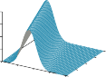
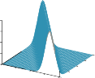
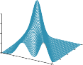
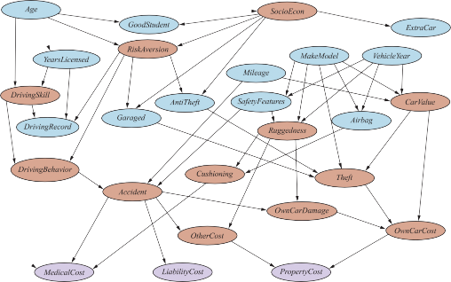
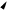
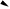
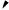
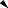
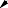

Representing Knowledge in an Uncertain Domain
In Chapter 12, we saw that the full joint probability distribution can answer any question about
the domain, but can become intractably large as the number of variables grows. Furthermore,
specifying probabilities for possible worlds one by one is unnatural and tedious.We also saw that independence and conditional independence relationships among vari-
ables can greatly reduce the number of probabilities that need to be specified in order to
define the full joint distribution. This section introduces a data structure called a Bayesian1 to represent the dependencies among variables. Bayesian networks can represent
essentially any full joint probability distribution and in many cases can do so very concisely.A Bayesian network is a directed graph in which each node is annotated with quantitative
probability information. The full specification is as follows:Each node corresponds to a random variable, which may be discrete or continuous.
Directed links or arrows connect pairs of nodes. If there is an arrow from node X to
node Y, X is said to be a parent of Y. The graph has no directed cycles and hence is a
directed acyclic graph, or DAG.|
Each node Xi has associated probability information θ(Xi Parents(Xi)) that quantifies
the effect of the parents on the node using a finite number of parameters.
1 Bayesian networks, often abbreviated to “Bayes net,” were called belief networks in the 1980s and 1990s. A
causal network is a Bayes net with additional constraints on the meaning of the arrows (see Section 13.5). The
term graphical model refers to a broader class that includes Bayesian networks.Weather
Section 13.1 Representing Knowledge in an Uncertain Domain 431
Cavity
Toothache
Catch
Figure 13.1 A simple Bayesian network in which Weather is independent of the other three
variables and Toothache and Catch are conditionally independent, given Cavity.The topology of the network—the set of nodes and links—specifies the conditional indepen-
dence relationships that hold in the domain, in a way that will be made precise shortly. The
intuitive meaning of an arrow is typically that X has a direct influence on Y, which suggests
that causes should be parents of effects. It is usually easy for a domain expert to decide what
direct influences exist in the domain—much easier, in fact, than actually specifying the prob-
abilities themselves. Once the topology of the Bayes net is laid out, we need only specify the
local probability information for each variable, in the form of a conditional distribution given
its parents. The full joint distribution for all the variables is defined by the topology and the
local probability information.Recall the simple world described in Chapter 12, consisting of the variables Toothache,
Cavity, Catch, and Weather. We argued that Weather is independent of the other vari-
ables; furthermore, we argued that Toothache and Catch are conditionally independent, given
Cavity. These relationships are represented by the Bayes net structure shown in Figure 13.1.
Formally, the conditional independence of Toothache and Catch, given Cavity, is indicated
by the absence of a link between Toothache and Catch. Intuitively, the network represents the
fact that Cavity is a direct cause of Toothache and Catch, whereas no direct causal relationship
exists between Toothache and Catch.Now consider the following example, which is just a little more complex. You have a new
burglar alarm installed at home. It is fairly reliable at detecting a burglary, but is occasionally
set off by minor earthquakes. (This example is due to Judea Pearl, a resident of earthquake-
prone Los Angeles.) You also have two neighbors, John and Mary, who have promised to call
you at work when they hear the alarm. John nearly always calls when he hears the alarm, but
sometimes confuses the telephone ringing with the alarm and calls then, too. Mary, on the
other hand, likes rather loud music and often misses the alarm altogether. Given the evidence
of who has or has not called, we would like to estimate the probability of a burglary.A Bayes net for this domain appears in Figure 13.2. The network structure shows that
burglary and earthquakes directly affect the probability of the alarm’s going off, but whether
John and Mary call depends only on the alarm. The network thus represents our assumptions
that they do not perceive burglaries directly, they do not notice minor earthquakes, and they
do not confer before calling.The local probability information attached to each node in Figure 13.2 takes the form
of a conditional probability table (CPT). (CPTs can be used only for discrete variables;
other representations, including those suitable for continuous variables, are described in Sec-Conditional
probability table
(CPT)432 Chapter 13 Probabilistic Reasoning
JohnCalls
A
P(J=true|A)
t
.90
f
.05
A
P(M=true|A)
t
.70
f
.01
Burglary
Earthquake
Alarm
MaryCalls
.95
.94
.29
.001
t t
t f
f t
f f
P(A=true|B,E)
B E
.002
P(E=true)
.001
P(B=true)
Figure 13.2 A typical Bayesian network, showing both the topology and the conditional
probability tables (CPTs). In the CPTs, the letters B, E, A, J, and M stand for Burglary,
Earthquake, Alarm, JohnCalls, and MaryCalls, respectively.Conditioning case
tion 13.2.) Each row in a CPT contains the conditional probability of each node value for a
conditioning case. A conditioning case is just a possible combination of values for the parent
nodes—a miniature possible world, if you like. Each row must sum to 1, because the entries
represent an exhaustive set of cases for the variable. For Boolean variables, once you know
that the probability of a true value is p, the probability of false must be 1 p, so we often
omit the second number, as in Figure 13.2. In general, a table for a Boolean variable with kBoolean parents contains 2k independently specifiable probabilities. A node with no parents
has only one row, representing the prior probabilities of each possible value of the variable.—
Notice that the network does not have nodes corresponding to Mary’s currently listening
to loud music or to the telephone ringing and confusing John. These factors are summarized
in the uncertainty associated with the links from Alarm to JohnCalls and MaryCalls. This
shows both laziness and ignorance in operation, as explained on page 404: it would be a lot
of work to find out why those factors would be more or less likely in any particular case, and
we have no reasonable way to obtain the relevant information anyway.The probabilities actually summarize a potentially infinite set of circumstances in which
the alarm might fail to go off (high humidity, power failure, dead battery, cut wires, a dead
mouse stuck inside the bell, etc.) or John or Mary might fail to call and report it (out to lunch,
on vacation, temporarily deaf, passing helicopter, etc.). In this way, a small agent can cope
with a very large world, at least approximately.The Semantics of Bayesian Networks
The syntax of a Bayes net consists of a directed acyclic graph with some local probability
information attached to each node. The semantics defines how the syntax corresponds to a
joint distribution over the variables of the network.Assume that the Bayes net contains n variables, X1, . . . , Xn. A generic entry in the joint
distribution is then P(X1 = x1 ∧ . . . ∧ Xn = xn), or P(x1, . . . , xn) for short. The semantics ofSection 13.2 The Semantics of Bayesian Networks 433
Bayes nets defines each entry in the joint distribution as follows:
n
|
P(x1, . . . , xn) = ∏ θ(xi parents(Xi)) , (13.1)
i = 1
where parents(Xi) denotes the values of Parents(Xi) that appear in x1, . . . , xn. Thus, each
entry in the joint distribution is represented by the product of the appropriate elements of the
local conditional distributions in the Bayes net.To illustrate this, we can calculate the probability that the alarm has sounded, but neither
a burglary nor an earthquake has occurred, and both John and Mary call. We simply multiply
the relevant entries from the local conditional distributions (abbreviating the variable names):P( j, m, a, ¬b, ¬e) = P( j |a)P(m|a)P(a|¬b∧¬e)P(¬b)P(¬e)
= 0.90 × 0.70 × 0.001 × 0.999 × 0.998 = 0.000628 .
Section 12.3 explained that the full joint distribution can be used to answer any query about
the domain. If a Bayes net is a representation of the joint distribution, then it too can be used
to answer any query, by summing all the relevant joint probability values, each calculated by
multiplying probabilities from the local conditional distributions. Section 13.3 explains this
in more detail, but also describes methods that are much more efficient.|
|
|
So far, we have glossed over one important point: what is the meaning of the numbers
that go into the local conditional distributions θ(xi parents(Xi))? It turns out that from Equa-
tion (13.1) we can prove that the parameters θ(xi parents(Xi)) are exactly the conditional
probabilities P(xi parents(Xi)) implied by the joint distribution. Remember that the condi-
tional probabilities can be computed from the joint distribution as follows:i | i ≡
P(x parents(X )) P(xi, parents(Xi))
P(parents(Xi))
∑y P(xi, parents(Xi), y)
= ∑ x′, yP(x′, parents(Xi), y)
i i
| |
where y represents the values of all variables other than Xi and its parents. From this last line
one can prove that P(xi parents(Xi)) = θ(xi parents(Xi)) (Exercise 13.CPTE). Hence, we
can rewrite Equation (13.1) asn
|
P(x1, . . . , xn) = ∏ P(xi parents(Xi)) . (13.2)
i = 1
|
This means that when one estimates values for the local conditional distributions, they need
to be the actual conditional probabilities for the variable given its parents. So, for example,
when we specify θ(JohnCalls = true Alarm = true) = 0.90, it should be the case that about
90% of the time when the alarm sounds, John calls. The fact that each parameter of the
network has a precise meaning in terms of only a small set of variables is crucially important
for robustness and ease of specification of the models.A method for constructing Bayesian networks
Equation (13.2) defines what a given Bayes net means. The next step is to explain how to
construct a Bayesian network in such a way that the resulting joint distribution is a good
representation of a given domain. We will now show that Equation (13.2) implies certain
conditional independence relationships that can be used to guide the knowledge engineer in434 Chapter 13 Probabilistic Reasoning
constructing the topology of the network. First, we rewrite the entries in the joint distribution
in terms of conditional probability, using the product rule (see page 408):P(x1, . . . , xn) = P(xn |xn−1, . . . , x1)P(xn−1, . . . , x1) .
Then we repeat the process, reducing each joint probability to a conditional probability and a
joint probability on a smaller set of variables. We end up with one big product:P(x1, . . . , xn) = P(xn |xn−1, . . . , x1)P(xn−1 |xn−2, . . . , x1) · · · P(x2 |x1)P(x1)
n
| −
= ∏ P(xi xi 1, . . . , x1) .
i = 1
Chain rule
Topological ordering
►
►
This identity is called the chain rule. It holds for any set of random variables. Comparing it
with Equation (13.2), we see that the specification of the joint distribution is equivalent to the
general assertion that, for every variable Xi in the network,P(Xi |Xi−1, . . . , X1) = P(Xi |Parents(Xi)) , (13.3)
⊆ { }
provided that Parents(Xi) Xi−1, . . . , X1 . This last condition is satisfied by numbering the
nodes in topological order—that is, in any order consistent with the directed graph structure.
For example, the nodes in Figure 13.2 could be ordered B, E, A, J, M; E, B, A, M, J; and so on.
What Equation (13.3) says is that the Bayesian network is a correct representation of the
domain only if each node is conditionally independent of its other predecessors in the nodeordering, given its parents. We can satisfy this condition with this methodology:
{ }
Nodes: First determine the set of variables that are required to model the domain. Now
order them, X1, . . . , Xn . Any order will work, but the resulting network will be more
compact if the variables are ordered such that causes precede effects.Links: For i = 1 to n do:
Choose a minimal set of parents for Xi from X1, . . . , Xi−1, such that Equation (13.3)
is satisfied.For each parent insert a link from the parent to Xi.
CPTs: Write down the conditional probability table, P(Xi|Parents(Xi)).
Intuitively, the parents of node Xi should contain all those nodes in X1, . . . , Xi−1 that directly
influence Xi. For example, suppose we have completed the network in Figure 13.2 except for
the choice of parents for MaryCalls. MaryCalls is certainly influenced by whether there is
a Burglary or an Earthquake, but not directly influenced. Intuitively, our knowledge of the
domain tells us that these events influence Mary’s calling behavior only through their effect
on the alarm. Also, given the state of the alarm, whether John calls has no influence on
Mary’s calling. Formally speaking, we believe that the following conditional independence
statement holds:P(MaryCalls|JohnCalls, Alarm, Earthquake, Burglary) = P(MaryCalls|Alarm) .
Thus, Alarm will be the only parent node for MaryCalls.
Because each node is connected only to earlier nodes, this construction method guaran-
tees that the network is acyclic. Another important property of Bayes nets is that they contain
no redundant probability values. If there is no redundancy, then there is no chance for incon-
sistency: it is impossible for the knowledge engineer or domain expert to create a BayesianSection 13.2 The Semantics of Bayesian Networks 435
Compactness and node ordering
As well as being a complete and nonredundant representation of the domain, a Bayes net
can often be far more compact than the full joint distribution. This property is what makes
it feasible to handle domains with many variables. The compactness of Bayesian networksis an example of a general property of locally structured (also called sparse) systems. In a Locally structured
locally structured system, each subcomponent interacts directly with only a bounded number
of other components, regardless of the total number of components. Local structure is usually
associated with linear rather than exponential growth in complexity.·
In the case of Bayes nets, it is reasonable to suppose that in most domains each ran-
dom variable is directly influenced by at most k others, for some constant k. If we assume
n Boolean variables for simplicity, then the amount of information needed to specify each
conditional probability table will be at most 2k numbers, and the complete network can be
specified by 2k n numbers. In contrast, the joint distribution contains 2n numbers. To make
this concrete, suppose we have n = 30 nodes, each with five parents (k = 5). Then the Bayesian
network requires 960 numbers, but the full joint distribution requires over a billion.Specifying the conditional probability tables for a fully connected network, in which
each variable has all of its predecessors as parents, requires the same amount of information
as specifying the joint distribution in tabular form. For this reason, we often leave out links
even though a slight dependency exists, because the slight gain in accuracy is not worth the
the additional complexity in the network. For example, one might object to our burglary
network on the grounds that if there is a large earthquake, then John and Mary would not call
even if they heard the alarm, because they assume that the earthquake is the cause. Whether
to add the link from Earthquake to JohnCalls and MaryCalls (and thus enlarge the tables)
depends on the importance of getting more accurate probabilities compared with the cost of
specifying the extra information.Even in a locally structured domain, we will get a compact Bayes net only if we choose
the node ordering well. What happens if we happen to choose the wrong order? Consider
the burglary example again. Suppose we decide to add the nodes in the order MaryCalls,
JohnCalls, Alarm, Burglary, Earthquake. We then get the somewhat more complicated net-
work shown in Figure 13.3(a). The process goes as follows:Adding MaryCalls: No parents.
Adding JohnCalls: If Mary calls, that probably means the alarm has gone off, which
makes it more likely that John calls. Therefore, JohnCalls needs MaryCalls as a parent.Adding Alarm: Clearly, if both call, it is more likely that the alarm has gone off than if
just one or neither calls, so we need both MaryCalls and JohnCalls as parents.Adding Burglary: If we know the alarm state, then the call from John or Mary might
give us information about our phone ringing or Mary’s music, but not about burglary:P(Burglary|Alarm, JohnCalls, MaryCalls) = P(Burglary|Alarm) .
Hence we need just Alarm as parent.
Adding Earthquake: If the alarm is on, it is more likely that there has been an earth-
quake. (The alarm is an earthquake detector of sorts.) But if we know that there has
been a burglary, then that explains the alarm, and the probability of an earthquake would
be only slightly above normal. Hence, we need both Alarm and Burglary as parents.
Sparse
436 Chapter 13 Probabilistic Reasoning
1
MaryCalls
2
JohnCalls
Alarm
4
2
Burglary
4
Earthquake
1
MaryCalls
2
JohnCalls
4
Earthquake
8
Burglary
16
Alarm
(a) (b)
Figure 13.3 Network structure and number of parameters depends on order of introduc-
tion. (a) The structure obtained with ordering M, J, A, B, E. (b) The structure obtained with
M, J, E, B, A. Each node is annotated with the number of parameters required; 13 in all for(a) and 31 for (b). In Figure 13.2, only 10 parameters were required.
Descendant
The resulting network has two more links than the original network in Figure 13.2 and re-
quires 13 conditional probabilities rather than 10. What’s worse, some of the links represent
tenuous relationships that require difficult and unnatural probability judgments, such as as-
sessing the probability of Earthquake, given Burglary and Alarm. This phenomenon is quite
general and is related to the distinction between causal and diagnostic models introducedin Section 12.5.1 (see also Exercise 13.WUMD). If we stick to a causal model, we end up
having to specify fewer numbers, and the numbers will often be easier to come up with. For
example, in the domain of medicine, it has been shown by Tversky and Kahneman (1982)
that expert physicians prefer to give probability judgments for causal rules rather than for
diagnostic ones. Section 13.5 explores the idea of causal models in more depth.Figure 13.3(b) shows a very bad node ordering: MaryCalls, JohnCalls, Earthquake,
Burglary, Alarm. This network requires 31 distinct probabilities to be specified—exactly
the same number as the full joint distribution. It is important to realize, however, that any
of the three networks can represent exactly the same joint distribution. The two versions in
Figure 13.3 simply fail to represent all the conditional independence relationships and hence
end up specifying a lot of unnecessary numbers instead.Conditional independence relations in Bayesian networks
From the semantics of Bayes nets as defined in Equation (13.2), we can derive a number of
conditional independence properties. We have already seen the property that a variable is
conditionally independent of its other predecessors, given its parents. It is also possible to
prove the more general “non-descendants” property that:Each variable is conditionally independent of its non-descendants, given its parents.
Section 13.2 The Semantics of Bayesian Networks 437
U1
. . .
Um
Z1j
X
Znj
Y1
. . .
Yn
U1
. . .
Um
Z1j
X
Z
nj
Y1
. . .
Yn
(a) (b)
Figure 13.4 (a) A node X is conditionally independent of its non-descendants (e.g., the Zi js)
given its parents (the Uis shown in the lavender area). (b) A node X is conditionally indepen-
dent of all other nodes in the network given its Markov blanket (the lavender area).For example, in Figure 13.2, the variable JohnCalls is independent of Burglary, Earthquake,
and MaryCalls given the value of Alarm. The definition is illustrated in Figure 13.4(a).| |
It turns out that the non-descendants property combined with interpretation of the net-
work parameters θ(Xi Parents(Xi)) as conditional probabilities P(Xi Parents(Xi)) suffices to
reconstruct the full joint distribution given in Equation (13.2). In other words, one can view
the semantics of Bayes nets in a different way: instead of defining the full joint distribution as
the product of conditional distributions, the network defines a set of conditional independence
properties. The full joint distribution can be derived from those properties.Another important independence property is implied by the non-descendants property:
a variable is conditionally independent of all other nodes in the network, given its parents,
children, and children’s parents—that is, given its Markov blanket. Markov blanket
(Exercise 13.MARB asks you to prove this.) For example, the variable Burglary is independent
of JohnCalls and MaryCalls, given Alarm and Earthquake. This property is illustrated in Fig-
ure 13.4(b). The Markov blanket property makes possible inference algorithms that use com-
pletely local and distributed stochastic sampling processes, as explained in Section 13.4.2.The most general conditional independence question one might ask in a Bayes net is
whether a set of nodes X is conditionally independent of another set Y, given a third set Z.This can be determined efficiently by examining the Bayes net to see whether Z d-separates D-separation
X and Y. The process works as follows:
Consider just the ancestral subgraph consisting of X, Y, Z, and their ancestors. Ancestral subgraph
Add links between any unlinked pair of nodes that share a common child; now we have
the so-called moral graph. Moral graph
Replace all directed links by undirected links.
If Z blocks all paths between X and Y in the resulting graph, then Z d-separates X and
Y. In that case, X is conditionally independent of Y, given Z. Otherwise, the original
Bayes net does not require conditional independence.438 Chapter 13 Probabilistic Reasoning
Canonical
distributionDeterministic nodes
Context-specific
independenceNoisy-OR
In brief, then, d-separation means separation in the undirected, moralized, ancestral subgraph.
Applying the definition to the burglary network in Figure 13.2, we can deduce that Burglaryand Earthquake are independent given the empty set (i.e., they are absolutely independent);
that they are not necessarily conditionally independent given Alarm; and that JohnCalls and
MaryCalls are conditionally independent given Alarm. Notice also that the Markov blanket
property follows directly from the d-separation property, since a variable’s Markov blanket
d-separates it from all other variables.
Efficient Representation of Conditional Distributions
Even if the maximum number of parents k is smallish, filling in the CPT for a node requires
up to O(2k) numbers and perhaps a great deal of experience with all the possible conditioning
cases. In fact, this is a worst-case scenario in which the relationship between the parents and
the child is completely arbitrary. Usually, such relationships are describable by a canonicalthat fits some standard pattern. In such cases, the complete table can be specified
just by naming the pattern and perhaps supplying a few parameters.The simplest example is provided by deterministic nodes. A deterministic node has its
value specified exactly by the values of its parents, with no uncertainty. The relationship
can be a logical one: for example, the relationship between the parent nodes Canadian, US,
Mexican and the child node NorthAmerican is simply that the child is the disjunction of the
parents. The relationship can also be numerical: for example, the BestPrice for a car is the
minimum of the prices at each dealer in the area; and the WaterStored in a reservoir at year’s
end is the sum of the original amount, plus the inflows (rivers, runoff, precipitation) and
minus the outflows (releases, evaporation, seepage).Many Bayes net systems allow the user to specify deterministic functions using a general-
purpose programming language; this makes it possible to include complex elements such as
global climate models or power-grid simulators within a probabilistic model.Another important pattern that occurs often in practice is context-specific independenceor CSI. A conditional distribution exhibits CSI if a variable is conditionally independent of
some of its parents given certain values of others. For example, let’s suppose that the Damageto your car occurring during a given period of time depends on the Ruggedness of your car
and whether or not an Accident occurred in that period. Clearly, if Accident is false, then the
Damage, if any, doesn’t depend on the Ruggedness of your car. (There might be vandalism
damage to the car’s paintwork or windows, but we’ll assume all cars are equally subject to
such damage.) We say that Damage is context-specifically independent of Ruggedness given
Accident = false. Bayes net systems often implement CSI using an if-then-else syntax for
specifying conditional distributions; for example, one might writeP(Damage|Ruggedness, Accident) =
if (Accident = false) then d1 else d2(Ruggedness)
where d1 and d2 represent arbitrary distributions. As with determinism, the presence of CSI in
a network may facilitate efficient inference. All of the exact inference algorithms mentioned
in Section 13.3 can be modified to take advantage of CSI to speed up computation.Uncertain relationships can often be characterized by so-called noisy logical relation-
ships. The standard example is the noisy-OR relation, which is a generalization of the logical
OR. In propositional logic, we might say that Fever is true if and only if Cold, Flu, or MalariaSection 13.2 The Semantics of Bayesian Networks 439
Cold
Flu
Malaria
P(fever
| ·)
P(¬fever|·)
f
f
f
f
t
t
t
tf
f
t
t
f
f
t
tf
t
f
t
f
t
f
t0.0
0.9
0.8
0.98
0.4
0.94
0.88
0.988
1.0
0.1
0.2
0.02 = 0.2 × 0.1
0.6
0.06 = 0.6 × 0.1
0.12 = 0.6 × 0.2
0.012 = 0.6 × 0.2 × 0.1
|
Figure 13.5 A complete conditional probability table for P(Fever Cold, Flu, Malaria), as-
suming a noisy-OR model with the the three q-values shown in bold.are true. The noisy-OR model allows for uncertainty about the ability of each parent to cause
the child to be true—the causal relationship between parent and child may be inhibited, and
so a patient could have a cold, but not exhibit a fever.The model makes two assumptions. First, it assumes that all the possible causes are listed.
(If some are missing, we can always add a so-called leak node that covers “miscellaneous Leak node
causes.”) Second, it assumes that inhibition of each parent is independent of inhibition of any
other parents: for example, whatever inhibits Malaria from causing a fever is independent of
whatever inhibits Flu from causing a fever. Given these assumptions, Fever is false if and only
if all its true parents are inhibited, and the probability of this is the product of the inhibition
probabilities q j for each parent. Let us suppose these individual inhibition probabilities are
as follows:qcold = P(¬fever|cold, ¬flu, ¬malaria) = 0.6 ,
qflu = P(¬fever|¬cold, flu, ¬malaria) = 0.2 ,
qmalaria = P(¬fever|¬cold, ¬flu, malaria) = 0.1 .Then, from this information and the noisy-OR assumptions, the entire CPT can be built. The
general rule is thatP(xi | parents(Xi)) = 1 − ∏ q j ,
{ j:Xj = true}
where the product is taken over the parents that are set to true for that row of the CPT.
Figure 13.5 illustrates this calculation.In general, noisy logical relationships in which a variable depends on k parents can be
described using O(k) parameters instead of O(2k) for the full conditional probability table.
This makes assessment and learning much easier. For example, the CPCS network (Prad-
han et al., 1994) uses noisy-OR and noisy-MAX distributions to model relationships among
diseases and symptoms in internal medicine. With 448 nodes and 906 links, it requires only
8,254 parameters instead of 133,931,430 for a network with full CPTs.440 Chapter 13 Probabilistic Reasoning
Discretization
Nonparametric
Hybrid Bayesian
networkLinear–Gaussian
Bayesian nets with continuous variables
—
Many real-world problems involve continuous quantities, such as height, mass, temperature,
and money. By definition, continuous variables have an infinite number of possible values,
so it is impossible to specify conditional probabilities explicitly for each value. One way to
handle continuous variables is with discretization—that is, dividing up the possible values
into a fixed set of intervals. For example, temperatures could be divided into three categories:
(<0oC), (0oC 100oC), and (>100oC). In choosing the number of categories, there is a
tradeoff between loss of accuracy and large CPTs which can lead to slow run times.N
Another approach is to define a continuous variable using one of the standard families
of probability density functions (see Appendix A). For example, a Gaussian (or normal)
distribution (x; µ, σ2) is specified by just two parameters, the mean µ and the variance
σ2. Yet another solution—sometimes called a nonparametric representation—is to define
the conditional distribution implicitly with a collection of instances, each containing specific
values of the parent and child variables. We explore this approach further in Chapter 19.A network with both discrete and continuous variables is called a hybrid Bayesian net-. To specify a hybrid network, we have to specify two new kinds of distributions: the
conditional distribution for a continuous variable given discrete or continuous parents; and the
conditional distribution for a discrete variable given continuous parents. Consider the simple
example in Figure 13.6, in which a customer buys some fruit depending on its cost, which
depends in turn on the size of the harvest and whether the government’s subsidy scheme is op-
erating. The variable Cost is continuous and has continuous and discrete parents; the variable
Buys is discrete and has a continuous parent.| ¬
|
|
For the Cost variable, we need to specify P(Cost Harvest, Subsidy). The discrete par-
ent is handled by enumeration—that is, by specifying both P(Cost Harvest, subsidy) and
P(Cost Harvest, subsidy). To handle Harvest, we specify how the distribution over the cost
c depends on the continuous value h of Harvest. In other words, we specify the parametersof the cost distribution as a function of h. The most common choice is the linear–Gaussianconditional distribution, in which the child has a Gaussian distribution whose mean µ varies
linearly with the value of the parent and whose standard deviation σ is fixed. We need two
distributions, one for subsidy and one for ¬subsidy, with different parameters:2 1
— 1 c−(at h+bt ) 2
√
t
P(c|h, subsidy) = N (c; ath + bt, σt ) = σ
e 2 σt
2π
1 1 c−(a f h+b f ) 2
f
√
σ f
P(c|h, ¬subsidy) = N (c; a f h + b f , σ2) =
e− 2 σf .
2π
|
For this example, then, the conditional distribution for Cost is specified by naming the linear–
Gaussian distribution and providing the parameters at, bt, σt, a f , b f , and σ f . Figures 13.7(a)
and (b) show these two relationships. Notice that in each case the slope of c versus h is
negative, because cost decreases as the harvest size increases. (Of course, the assumption of
linearity implies that the cost becomes negative at some point; the linear model is reasonable
only if the harvest size is limited to a narrow range.) Figure 13.7(c) shows the distribution
P(c h), averaging over the two possible values of Subsidy and assuming that each has prior
probability 0.5. This shows that even with very simple models, quite interesting distributions
can be represented.Section 13.2 The Semantics of Bayesian Networks 441
Subsidy
Harvest
Cost
Buys
Figure 13.6 A simple network with discrete variables (Subsidy and Buys) and continuous
variables (Harvest and Cost).P(c | h, subsidy)
| h, subsidy)
P(c | h)
0.4
0.4
0.4
0.3
0.3
0.3
0.2
0.2
0.2

0.1
0 0 3
12 0.1

6 9 0 0 3
12 0.1 12

6 9 0 0 3 6 9
Cost c 6 9 12 0 3
Harvest
Cost c 6 9 12 0 3
Harvest
Cost c 6 9 12 0 3
Harvest
(a) (b) (c)
Figure 13.7 The graphs in (a) and (b) show the probability distribution over Cost as a func-
tion of Harvest size, with Subsidy true and false, respectively. Graph (c) shows the distribu-
tion P(Cost|Harvest), obtained by summing over the two subsidy cases.The linear–Gaussian conditional distribution has some special properties. A network con-
taining only continuous variables with linear–Gaussian distributions has a joint distribution
that is a multivariate Gaussian distribution (see Appendix A) over all the variables (Exer-
cise 13.LGEX). Furthermore, the posterior distribution given any evidence also has this prop-
erty.2 When discrete variables are added as parents (not as children) of continuous variables,the network defines a conditional Gaussian, or CG, distribution: given any assignment to the Conditional Gaussian
discrete variables, the distribution over the continuous variables is a multivariate Gaussian.
Now we turn to the distributions for discrete variables with continuous parents. Consider,for example, the Buys node in Figure 13.6. It seems reasonable to assume that the customer
will buy if the cost is low and will not buy if it is high and that the probability of buying
varies smoothly in some intermediate region. In other words, the conditional distribution is
like a “soft” threshold function. One way to make soft thresholds is to use the integral of thestandard normal distribution:
( ) =
(
,
)
.
Φ x ∫ x N s; 0 1 ds
−∞
2 It follows that inference in linear–Gaussian networks takes only O(n3) time in the worst case, regardless of the
network topology. In Section 13.3, we see that inference for networks of discrete variables is NP-hard.442 Chapter 13 Probabilistic Reasoning
Logit
Probit0.5 1
0.4 0.8
P(c)
P(buys | c)
0.3 0.6
0.2 0.4
0.1 0.2
0
0 2 4 6 8 10 12
Cost c
(a)
0
0 2 4 6 8 10 12
Cost c
(b)
Figure 13.8 (a) A normal (Gaussian) distribution for the cost threshold, centered on µ = 6.0
with standard deviation σ = 1.0. (b) Expit and probit models for the probability of buys given
cost, for the parameters µ = 6.0 and σ = 1.0.Probit
Expit
Φ(x) is an increasing function of x, whereas the probability of buying decreases with cost, so
here we flip the function around:P(buys|Cost = c) = 1 − Φ((c− µ)/σ) ,
which means that the cost threshold occurs around µ, the width of the threshold region is pro-
portional to σ, and the probability of buying decreases as cost increases. This probit model
(pronounced “pro-bit” and short for “probability unit”) is illustrated in Figure 13.8(a). The
form can be justified by proposing that the underlying decision process has a hard threshold,
but that the precise location of the threshold is subject to random Gaussian noise.An alternative to the probit model is the expit or inverse logit model. It uses the logistic
Inverse logit function 1/(1 + e−x) to produce a soft threshold—it maps any x to a value between 0 and 1.
Logistic function Again, for our √example, we flip it around to make a decreasing function; we also scale the
exponent by 4/ 2π to match the probit’s slope at the mean:
1 + exp(−√4 . c−µ )
P(buys|Cost = c) = 1 − 1 .
2π
σ
This is illustrated in Figure 13.8(b). The two distributions look similar, but the logit actually
has much longer “tails.” The probit is often a better fit to real situations, but the logistic
function is sometimes easier to deal with mathematically. It is used widely in machine learn-
ing. Both models can be generalized to handle multiple continuous parents by taking a linear
combination of the parent values. This also works for discrete parents if their values are in-
tegers; for example, with k Boolean parents, each viewed as having values 0 or 1, the input
to the expit or probit distribution would be a weighted linear combination with k parameters,
yielding a model quite similar to the noisy-OR model discussed earlier.Case study: Car insurance
A car insurance company receives an application from an individual to insure a specific ve-
hicle and must decide on the appropriate annual premium to charge, based on the anticipated
claims it will pay out for this applicant. The task is to build a Bayes net that captures theSection 13.2 The Semantics of Bayesian Networks 443

Figure 13.9 A Bayesian network for evaluating car insurance applications.
causal structure of the domain and gives an accurate, well-calibrated distribution over the
output variables given the evidence available from the application form.3 The Bayes net willinclude hidden variables that are neither input nor output variables, but are essential for Hidden variable
structuring the network so that it is reasonably sparse with a manageable number of parame-
ters. The hidden variables are shaded brown in Figure 13.9.The claims to be paid out—shaded lavender in Figure 13.9—are of three kinds: the
MedicalCost for any injuries sustained by the applicant; the LiabilityCost for lawsuits filed by
other parties against the applicant and the company; and the PropertyCost for vehicle damage
to either party and vehicle loss by theft. The application form asks for the following input
information (the light blue nodes in Figure 13.9):About the applicant: Age; YearsLicensed—how long since a driving license was first
obtained; DrivingRecord—some summary, perhaps based on “points,” of recent acci-
dents and traffic violations; and (for students) a GoodStudent indicator for a grade-point
average of 3.0 (B) on a 4-point scale.About the vehicle: the MakeModel and VehicleYear; whether it has an Airbag; and some
summary of SafetyFeatures such as anti-lock braking and collision warning.About the driving situation: the annual Mileage driven and how securely the vehicle is
Garaged, if at all.
3 The network shown in Figure 13.9 is not in actual use, but its structure has been vetted with insurance experts.
In practice, the information requested on application forms varies by company and jurisdiction—for example,
some ask for Gender—and the model could certainly be made more detailed and sophisticated.444 Chapter 13 Probabilistic Reasoning
Now we need to think about how to arrange these into a causal structure. The key hidden
variables are whether or not a Theft or Accident will occur in the next time period. Obviously,
one cannot ask the applicant to predict these; they have to be inferred from the available
information and the insurer’s previous experience.What are the causal factors leading to Theft? The MakeModel is certainly important—
some models are stolen much more often than others because there is an efficient resale
market for vehicles and parts; the CarValue also matters, because an old, beat-up, or high-
mileage vehicle has lower resale value. Moreover, a vehicle that is Garaged and has an
AntiTheft device is harder to steal. The hidden variable CarValue depends in turn on the
MakeModel, VehicleYear, and Mileage. CarValue also dictates the loss amount when a Theftoccurs, so that is one of the contributors to OwnCarCost (the other being accidents, which
we will get to shortly).It is common in models of this type to introduce another hidden variable, SocioEcon,
the socioeconomic category of the applicant. This is thought to influence a wide range of
behaviors and characteristics. In our model, there is no direct evidence in the form of observed
income and occupation variables;4 but SocioEcon influences MakeModel and VehicleYear; it
also affects ExtraCar and GoodStudent, and depends somewhat on Age.For any insurance company, perhaps the most important hidden variable is RiskAversion:
people who are risk-averse are good insurance risks! Age and SocioEcon affect RiskAversion,
and its “symptoms” include the applicant’s choice of whether the vehicle is Garaged and has
AntiTheft devices and SafetyFeatures.In predicting future accidents, the key is the applicant’s future DrivingBehavior, which
is influenced by both RiskAversion and DrivingSkill; the latter in turn depends on Age and
YearsLicensed. The applicant’s past driving behavior is reflected in the DrivingRecord, which
also depends on RiskAversion and DrivingSkill as well as on YearsLicensed (because some-
one who started driving only recently may not have had time to accumulate a litany of acci-
dents and violations). In this way, DrivingRecord provides evidence about RiskAversion and
DrivingSkill, which in turn help to predict future DrivingBehavior.We can think of DrivingBehavior as a per-mile tendency to drive in an accident-prone
way; whether an Accident actually occurs in a fixed time period depends also on the annual
Mileage and on the SafetyFeatures of the vehicle. If an Accident occurs, there are three
kinds of costs: the MedicalCost for the applicant depends on Age and Cushioning, which
depends in turn on the Ruggedness of the car and whether it has an Airbag; the LiabilityCost(medical, pain and suffering, loss of income, etc.) for the other driver; and the PropertyCostfor the applicant and the other driver, both of which depend (in different ways) on the car’s
Ruggedness and on the applicant’s CarValue.We have illustrated the kind of reasoning that goes into developing the topology and
hidden variables in a Bayes net. We also need to specify the ranges and the conditional distri-
butions for each variable. For the ranges, the primary decision is often whether to make the
variable discrete or continuous. For example, the Ruggedness of the vehicle could be a con-
tinuous variable between 0 and 1, or a discrete variable with range {TinCan, Normal, Tank}.4 Some insurance companies also acquire the applicant’s credit history to help in assessing risk; this provides
considerably more information about socioeconomic category. Whenever using hidden variables of this kind, one
must be careful that they do not inadvertently become proxies for variables such as race that may not be used in
insurance decisions. Techniques for avoiding biases of this kind are described in Chapter 19.Section 13.3 Exact Inference in Bayesian Networks 445
Continuous variables provide more precision, but they make exact inference impossible
except in a few special cases. A discrete variable with many possible values can make it te-
dious to fill in the correspondingly large conditional probability tables and makes exact infer-
ence more expensive unless the variable’s value is always observed. For example, MakeModelin a real system would have thousands of possible values, and this causes its child CarValueto have an enormous CPT that would have to be filled in from industry databases; but, be-
cause the MakeModel is always observed, this does not contribute to inference complexity:
in fact, the observed values for the three parents pick out exactly one relevant row of the CPT
for CarValue.The conditional distributions in the model are given in the code repository for the book;
we provide a version with only discrete variables, for which exact inference can be per-
formed. In practice, many of the variables would be continuous and the conditional distribu-
tions would be learned from historical data on applicants and their insurance claims. We will
see how to learn Bayes net models from data in Chapter 21.The final question is, of course, how to do inference in the network to make predictions.
We turn now to this question. For each inference method that we describe, we will evaluate
the method on the insurance net to measure the time and space requirements of the method.
Exact Inference in Bayesian Networks
The basic task for any probabilistic inference system is to compute the posterior probability
distribution for a set of query variables, given some observed event—usually, some assign- Event
ment of values to a set of evidence variables.5 To simplify the presentation, we will consider|
| |
only one query variable at a time; the algorithms can easily be extended to queries with mul-
tiple variables. (For example, we can solve the query P(U,V e) by multiplying P(V e) and
P(U V, e).) We will use the notation from Chapter 12: X denotes the query variable; E de-
notes the set of evidence variables E1, , Em, and e is a particular observed event; Y denotesthe hidden (nonevidence, nonquery) variables Y1, ,Yl. Thus, the complete set of variables
{ } ∪ ∪ |
is X E Y. A typical query asks for the posterior probability distribution P(X e).
In the burglary network, we might observe the event in which JohnCalls = true and
MaryCalls = true. We could then ask for, say, the probability that a burglary has occurred:
P(Burglary|JohnCalls = true, MaryCalls = true) = ⟨0.284, 0.716⟩ .
In this section we discuss exact algorithms for computing posterior probabilities as well as
the complexity of this task. It turns out that the general case is intractable, so Section 13.4
covers methods for approximate inference.Inference by enumeration
|
Chapter 12 explained that any conditional probability can be computed by summing terms
from the full joint distribution. More specifically, a query P(X e) can be answered using
Equation (12.9), which we repeat here for convenience:|
P(X e) = α P(X , e) = α ∑P(X , e, y) .
y
5 Another widely studied task is finding the most probable explanation for some observed evidence. This and
other tasks are discussed in the notes at the end of the chapter.446 Chapter 13 Probabilistic Reasoning
Now, a Bayes net gives a complete representation of the full joint distribution. More specifi-
cally, Equation (13.2) on page 433 shows that the terms P(x, e, y) in the joint distribution canbe written as products of conditional probabilities from the network. Therefore, a query can
be answered using a Bayes net by computing sums of products of conditional probabilities
from the network.
|
Consider the query P(Burglary JohnCalls = true, MaryCalls = true). The hidden vari-
ables for this query are Earthquake and Alarm. From Equation (12.9), using initial letters for
the variables to shorten the expressions, we haveP(B| j, m) = α P(B, j, m) = α ∑∑P(B, j, m, e, a) .
e a
The semantics of Bayes nets (Equation (13.2)) then gives us an expression in terms of CPT
entries. For simplicity, we do this just for Burglary = true:P(b| j, m) = α ∑∑P(b)P(e)P(a|b, e)P( j |a)P(m|a) . (13.4)
e a
To compute this expression, we have to add four terms, each computed by multiplying five
numbers. In the worst case, where we have to sum out almost all the variables, there will be
O(2n) terms in the sum, each a product of O(n) probability values. A naive implementation
would therefore have complexity O(n2n).This can be reduced to O(2n) by taking advantage of the nested structure of the compu-
tation. In symbolic terms, this means moving the summations inwards as far as possible in
expressions such as Equation (13.4). We can do this because not all the factors in the product
of probabilities depend on all the variables. Thus we haveP(b| j, m) = α P(b) ∑P(e) ∑P(a|b, e)P( j |a)P(m|a) . (13.5)
e a
This expression can be evaluated by looping through the variables in order, multiplying CPT
entries as we go. For each summation, we also need to loop over the variable’s possible val-
ues. The structure of this computation is shown as a tree in Figure 13.10. Using the numbers
from Figure 13.2, we obtain P(b| j, m) = α × 0.00059224. The corresponding computation
for ¬b yields α × 0.0014919; hence,P(B| j, m) = α ⟨0.00059224, 0.0014919⟩ ≈ ⟨0.284, 0.716⟩ .
That is, the chance of a burglary, given calls from both neighbors, is about 28%.
The ENUMERATION-ASK algorithm in Figure 13.11 evaluates these expression trees us-
ing depth-first, left-to-right recursion. The algorithm is very similar in structure to the back-
tracking algorithm for solving CSPs (Figure 5.5) and the DPLL algorithm for satisfiability
(Figure 7.17). Its space complexity is only linear in the number of variables: the algorithm
sums over the full joint distribution without ever constructing it explicitly. Unfortunately, its
time complexity for a network with n Boolean variables (not counting the evidence variables)
is always O(2n)—better than the O(n 2n) for the simple approach described earlier, but still
rather grim. For the insurance network in Figure 13.9, which is relatively small, exact infer-
ence using enumeration requires around 227 million arithmetic operations for a typical query
on the cost variables.| | |¬ |¬
If you look carefully at the tree in Figure 13.10, however, you will see that it contains
repeated subexpressions. The products P( j a)P(m a) and P( j a)P(m a) are computed
twice, once for each value of E. The key to efficient inference in Bayes nets is avoiding such
wasted computations. The next section describes a general method for doing this.Section 13.3 Exact Inference in Bayesian Networks 447
P(b)
.001
P(e)
.002
P(¬e)
.998
P(a|b,e)
.95
P(¬a|b,e)
.05
P(a|b,¬e)
.94
P(¬a|b,¬e)
.06
P( j|¬a)
.05
P( j|a)
.90
P( j|¬a)
.05
P(m|¬a)
.01
P(m|a)
.70
P(m|¬a)
.01
P( j|a)
.90
P(m|a)
.70
Figure 13.10 The structure of the expression shown in Equation (13.5). The evaluation
proceeds top down, multiplying values along each path and summing at the “+” nodes. Notice
the repetition of the paths for j and m.function ENUMERATION-ASK(X, e, bn) returns a distribution over X
inputs: X, the query variable
e, observed values for variables E
bn, a Bayes net with variables vars
←
Q(X) a distribution over X, initially empty
for each value xi of X do
←
Q(xi) ENUMERATE-ALL(vars, exi )
where exi is e extended with X = xireturn Normalize(Q(X ))
function ENUMERATE-ALL(vars, e) returns a real number
if EMPTY?(vars) then return 1.0
←
V First(vars)
if V is an evidence variable with value v in e
| ×
| ×
then return P(v parents(V )) Enumerate-All(Rest(vars), e)
else return ∑v P(v parents(V )) Enumerate-All(Rest(vars), ev)where ev is e extended with V = v
Figure 13.11 The enumeration algorithm for exact inference in Bayes nets.
448 Chapter 13 Probabilistic Reasoning
Variable elimination
The variable elimination algorithm
The enumeration algorithm can be improved substantially by eliminating repeated calcula-
tions of the kind illustrated in Figure 13.10. The idea is simple: do the calculation once
and save the results for later use. This is a form of dynamic programming. There are sev-
eral versions of this approach; we present the variable elimination algorithm, which is the
simplest. Variable elimination works by evaluating expressions such as Equation (13.5) in
right-to-left order (that is, bottom up in Figure 13.10). Intermediate results are stored, and
summations over each variable are done only for those portions of the expression that depend
on the variable.Let us illustrate this process for the burglary network. We evaluate the expression
P(B| j, m) = α P(B) ∑P(e) ∑P(a|B, e) P( j |a) P(m|a) .
1
2
3
4
5
`f ˛(¸B)x e
`f ˛(¸Ex)
a `f (A˛,¸B,E)x ` f ˛(¸A) x` f ˛(¸A) x
| |
Factor
Notice that we have annotated each part of the expression with the name of the corresponding
factor; each factor is a matrix indexed by the values of its argument variables. For example,
the factors f4(A) and f5(A) corresponding to P( j a) and P(m a) depend just on A because J
and M are fixed by the query. They are therefore two-element vectors:f4(A) = P( j |a) = 0.90 f5(A) = P(m|a) = 0.70 .
P( j |¬a)
0.05
P(m|¬a)
0.01
| ¬ |¬ ¬
× ×
f3(A, B, E) will be a 2 2 2 matrix, which is hard to show on the printed page. (The “first”
element is given by P(a b, e) = 0.95 and the “last” by P( a b, e) = 0.999.) In terms of
factors, the query expression is written asP(B| j, m) = α f1(B) × ∑f2(E) × ∑f3(A, B, E) × f4(A) × f5(A) .
e a
Pointwise product
Here the “ ” operator is not ordinary matrix multiplication but instead the pointwise product
×
operation, to be described shortly.
The evaluation process sums out variables (right to left) from pointwise products of fac-
tors to produce new factors, eventually yielding a factor that constitutes the solution—that is,
the posterior distribution over the query variable. The steps are as follows:×
First, we sum out A from the product of f3, f4, and f5. This gives us a new 2 2 factor
f6(B, E) whose indices range over just B and E:
a
f6(B, E) = ∑f3(A, B, E) × f4(A) × f5(A)
= (f3(a, B, E) × f4(a) × f5(a)) + (f3(¬a, B, E) × f4(¬a) × f5(¬a)) .
Now we are left with the expression
e
P(B| j, m) = α f1(B) × ∑f2(E) × f6(B, E) .
×
Next, we sum out E from the product of f2 and f6:
f7(B) = ∑f2(E) f6(B, E)
e
= f2(e) × f6(B, e) + f2(¬e) × f6(B, ¬e) .
This leaves the expression
P(B| j, m) = α f1(B) × f7(B)
which can be evaluated by taking the pointwise product and normalizing the result.
Section 13.3 Exact Inference in Bayesian Networks 449
X
Y
f(X ,Y
)
Y
Z
g(Y, Z)
X
Y
Z
h(X ,Y, Z)
t
t
.3
t
t
.2
t
t
t
.3 × .2 = .06
t
f
.7
t
f
.8
t
t
f
.3 × .8 = .24
f
t
.9
f
t
.6
t
f
t
.7 × .6 = .42
f
f
.1
f
f
.4
t
f
f
.7 × .4 = .28
f
t
t
.9 × .2 = .18
f
t
f
.9 × .8 = .72
f
f
t
.1 × .6 = .06
f
f
f
.1 × .4 = .04
Figure 13.12 Illustrating pointwise multiplication: f(X ,Y ) × g(Y, Z) = h(X ,Y, Z).
Examining this sequence, we see that two basic computational operations are required: point-
wise product of a pair of factors, and summing out a variable from a product of factors. The
next section describes each of these operations.Operations on factors
The pointwise product of two factors f and g yields a new factor h whose variables are the
union of the variables in f and g and whose elements are given by the product of the corre-
sponding elements in the two factors. Suppose the two factors have variables Y1, . . . ,Yk in
common. Then we havef(X1 . . . Xj,Y1 . . .Yk) × g(Y1 . . .Yk, Z1, . . . Zl) = h(X1 . . . Xj,Y1 . . .Yk, Z1 . . . Zl)
×
If all the variables are binary, then f and g have 2 j+k and 2k+l entries, respectively, and the
pointwise product has 2 j+k+l entries. For example, given two factors f(X ,Y ) and g(Y, Z),
the pointwise product f g = h(X ,Y, Z) has 21+1+1 = 8 entries, as illustrated in Figure 13.12.
Notice that the factor resulting from a pointwise product can contain more variables than any
of the factors being multiplied and that the size of a factor is exponential in the number of
variables. This is where both space and time complexity arise in the variable elimination
algorithm.Summing out a variable from a product of factors is done by adding up the submatrices
formed by fixing the variable to each of its values in turn. For example, to sum out X from
h(X ,Y, Z), we write¬
h2(Y, Z) = ∑h(X ,Y, Z) = h(x,Y, Z) + h( x,Y, Z)
x
.42 .28
.06 .04
.48 .32
= .06 .24 + .18 .72 = .24 .96 .
The only trick is to notice that any factor that does not depend on the variable to be summed
out can be moved outside the summation. For example, to sum out X from the product of fand g, we can move g outside the summation:∑f(X ,Y ) × g(Y, Z) = g(Y, Z) × ∑f(X ,Y ) .
x x
450 Chapter 13 Probabilistic Reasoning
function ELIMINATION-ASK(X, e, bn) returns a distribution over X
inputs: X, the query variable
e, observed values for variables E
bn, a Bayesian network with variables vars
←
factors [ ]
for each V in Order(vars) do
←
factors [Make-Factor(V, e)] + factors
←
if V is a hidden variable then factors SUM-OUT(V, factors)
return Normalize(Pointwise-Product(factors))
Figure 13.13 The variable elimination algorithm for exact inference in Bayes nets.
This is potentially much more efficient than computing the larger pointwise product h first
and then summing X out from that.Notice that matrices are not multiplied until we need to sum out a variable from the
accumulated product. At that point, we multiply just those matrices that include the variable
to be summed out. Given functions for pointwise product and summing out, the variable
elimination algorithm itself can be written quite simply, as shown in Figure 13.13.Variable ordering and variable relevance
The algorithm in Figure 13.13 includes an unspecified ORDER function to choose an ordering
for the variables. Every choice of ordering yields a valid algorithm, but different orderings
cause different intermediate factors to be generated during the calculation. For example, in
the calculation shown previously, we eliminated A before E; if we do it the other way, the
calculation becomesP(B| j, m) = α f1(B) × ∑f4(A) × f5(A) × ∑f2(E) × f3(A, B, E) ,
a e
during which a new factor f6(A, B) will be generated.
In general, the time and space requirements of variable elimination are dominated by
the size of the largest factor constructed during the operation of the algorithm. This in turn
is determined by the order of elimination of variables and by the structure of the network.
It turns out to be intractable to determine the optimal ordering, but several good heuristics
are available. One fairly effective method is a greedy one: eliminate whichever variable
minimizes the size of the next factor to be constructed.|
Let us consider one more query: P(JohnCalls Burglary = true). As usual (see Equa-
tion (13.5)), the first step is to write out the nested summation:P(J |b) = α P(b) ∑P(e) ∑P(a|b, e)P(J |a) ∑P(m|a) .
e a m
|
|
Evaluating this expression from right to left, we notice something interesting: ∑m P(m a) is
equal to 1 by definition! Hence, there was no need to include it in the first place; the vari-
able M is irrelevant to this query. Another way of saying this is that the result of the query
P(JohnCalls Burglary = true) is unchanged if we remove MaryCalls from the network alto-
gether. In general, we can remove any leaf node that is not a query variable or an evidenceSection 13.3 Exact Inference in Bayesian Networks 451
variable. After its removal, there may be some more leaf nodes, and these too may be irrele-
vant. Continuing this process, we eventually find that every variable that is not an ancestor K
of a query variable or evidence variable is irrelevant to the query. A variable elimination
algorithm can therefore remove all these variables before evaluating the query.
When applied to the insurance network shown in Figure 13.9, variable elimination shows
considerable improvement over the naive enumeration algorithm. Using reverse topological
order for the variables, exact inference using elimination is about 1,000 times faster than the
enumeration algorithm.The complexity of exact inference
The complexity of exact inference in Bayes nets depends strongly on the structure of the
network. The burglary network of Figure 13.2 belongs to the family of networks in which
there is at most one undirected path (i.e., ignoring the direction of the arrows) between anytwo nodes in the network. These are called singly connected networks or polytrees, and Singly connected
they have a particularly nice property: The time and space complexity of exact inference inHere, the size is defined as the number of CPT
entries; if the number of parents of each node is bounded by a constant, then the complexity
will also be linear in the number of nodes. These results hold for any ordering consistent with
the topological ordering of the network (Exercise 13.VEEX).Polytree
K
For multiply connected networks, such as the insurance network in Figure 13.9, variable Multiply connected
elimination can have exponential time and space complexity in the worst case, even when the
number of parents per node is bounded. This is not surprising when one considers that be- K
cause it includes inference in propositional logic as a special case, inference in Bayes netsis NP-hard. To prove this, we need to work out how to encode a propositional satisfiability
problem as a Bayes net, such that running inference on this net tells us whether or not the
original propositional sentences are satisfiable. (In the language of complexity theory, wereduce satisfiability problems to Bayes net inference problems.) This turns out to be quite Reduction
straightforward. Figure 13.14 shows how to encode a particular 3-SAT problem. The propo-
sitional variables become the root variables of the network, each with prior probability 0.5.
The next layer of nodes corresponds to the clauses, with each clause variable Cj connected
to the appropriate variables as parents. The conditional distribution for a clause variable is a
deterministic disjunction, with negation as needed, so that each clause variable is true if and
only if the assignment to its parents satisfies that clause. Finally, S is the conjunction of the
clause variables.To determine if the original sentence is satisfiable, we simply evaluate P(S = true). If
the sentence is satisfiable, then there is some possible assignment to the logical variables
that makes S true; in the Bayes net, this means that there is a possible world with nonzero
probability in which the root variables have that assignment, the clause variables have value
true, and S has value true. Therefore, P(S = true) > 0 for a satisfiable sentence. Conversely,
P(S = true) = 0 for an unsatisfiable sentence: all worlds with S = true have probability 0.
Hence, we can use Bayes net inference to solve 3-SAT problems; from this, we conclude that
Bayes net inference is NP-hard.We can, in fact, do more than this. Notice that the probability of each satisfying assign-
ment is 2−n for a problem with n variables. Hence, the number of satisfying assignments
is P(S = true)/(2−n). Because computing the number of satisfying assignments for a 3-SAT452 Chapter 13 Probabilistic Reasoning
W
¬
C1
X
C2
S
Y
C3
Z
¬
Figure 13.14 Bayes net encoding of the 3-CNF sentence
(W ∨X ∨Y ) ∧ (¬W ∨Y ∨Z) ∧ (X ∨Y ∨¬Z) .
Weighted model
countingClustering
Join treeproblem is #P-complete (“number-P complete”), this means that Bayes net inference is #P-
hard—that is, strictly harder than NP-complete problems.There is a close connection between the complexity of Bayes net inference and the com-
plexity of constraint satisfaction problems (CSPs). As we discussed in Chapter 5, the diffi-
culty of solving a discrete CSP is related to how “treelike” its constraint graph is. Measures
such as tree width, which bound the complexity of solving a CSP, can also be applied directly
to Bayes nets. Moreover, the variable elimination algorithm can be generalized to solve CSPs
as well as Bayes nets.As well as reducing satisfiability problems to Bayes net inference, we can reduce Bayes
net inference to satisfiability, which allows us to take advantage of the powerful machinery
developed for SAT-solving (see Chapter 7). In this case, the reduction is to a particular
form of SAT solving called weighted model counting (WMC). Regular model counting
counts the number of satisfying assignments for a SAT expression; WMC sums the total
weight of those satisfying assignments—where, in this application, the weight is essentially
the product of the conditional probabilities for each variable assignment given its parents.
(See Exercise 13.WMCX for details.) Partly because SAT-solving technology has been so
well optimized for large-scale applications, Bayes net inference via WMC is competitive
with and sometimes superior to other exact algorithms on networks with large tree width.Clustering algorithms
The variable elimination algorithm is simple and efficient for answering individual queries. If
we want to compute posterior probabilities for all the variables in a network, however, it can
be less efficient. For example, in a polytree network, one would need to issue O(n) queries
costing O(n) each, for a total of O(n2) time. Using clustering algorithms (also known as
join tree algorithms), the time can be reduced to O(n). For this reason, these algorithms are
widely used in commercial Bayes net tools.The basic idea of clustering is to join individual nodes of the network to form cluster
nodes in such a way that the resulting network is a polytree. For example, the multiply
connected network shown in Figure 13.15(a) can be converted into a polytree by combining
the Sprinkler and Rain node into a cluster node called Sprinkler+Rain, as shown in Fig-Section 13.4 Approximate Inference for Bayesian Networks 453
P(C=.5)
P(C=.5)
Cloudy
Sprinkler
Rain
C P(S|c)
t .10
C P(R|c)
t .80
f .50
WetGrass
f .20
Cloudy
Sprinkler+Rain
WetGrass
C
P(S+R|c)
t t t f f t f f
t
.08 .02 .72 .18
f
.10 .40 .10 .40
S
R
P(W|s,r)
t
t
.99
t
f
.90
f
t
.90
f
f
.00
S+R
P(W|s+r)
t t
.99
t f
.90
f t
.90
f f
.00
(a) (b)
Figure 13.15 (a) A multiply connected network describing Mary’s daily lawn routine: each
morning, she checks the weather; if it’s cloudy, she usually doesn’t turn on the sprinkler;
if the sprinkler is on, or if it rains during the day, the grass will be wet. Thus, Cloudyaffects WetGrass via two different causal pathways. (b) A clustered equivalent of the multiply
connected network.ure 13.15(b). The two Boolean nodes are replaced by a meganode that takes on four possible Meganode
values: tt, t f , f t, and f f . The meganode has only one parent, the Boolean variable Cloudy,
so there are two conditioning cases. Although this example doesn’t show it, the process of
clustering often produces meganodes that share some variables.Once the network is in polytree form, a special-purpose inference algorithm is required,
because ordinary inference methods cannot handle meganodes that share variables with each
other. Essentially, the algorithm is a form of constraint propagation (see Chapter 5) where the
constraints ensure that neighboring meganodes agree on the posterior probability of any vari-
ables that they have in common. With careful bookkeeping, this algorithm is able to compute
posterior probabilities for all the nonevidence nodes in the network in time linear in the size
of the clustered network. However, the NP-hardness of the problem has not disappeared: if a
network requires exponential time and space with variable elimination, then the CPTs in the
clustered network will necessarily be exponentially large.
Approximate Inference for Bayesian Networks
Given the intractability of exact inference in large networks, we will now consider approxi-
mate inference methods. This section describes randomized sampling algorithms, also calledMonte Carlo algorithms, that provide approximate answers whose accuracy depends on Monte Carlo
the number of samples generated. They work by generating random events based on the
probabilities in the Bayes net and counting up the different answers found in those randomevents. With enough samples, we can get arbitrarily close to recovering the true probability
distribution—provided the Bayes net has no deterministic conditional distributions.454 Chapter 13 Probabilistic Reasoning
Monte Carlo algorithms, of which simulated annealing (page 133) is an example, are used
in many branches of science to estimate quantities that are difficult to calculate exactly. In this
section, we are interested in sampling applied to the computation of posterior probabilities
in Bayes nets. We describe two families of algorithms: direct sampling and Markov chain
sampling. Several other approaches for approximate inference are mentioned in the notes at
the end of the chapter.Direct sampling methods
⟨ ⟩ ⟨ ⟩
The primitive element in any sampling algorithm is the generation of samples from a known
probability distribution. For example, an unbiased coin can be thought of as a random vari-
able Coin with values heads, tails and a prior distribution P(Coin) = 0.5, 0.5 . Sampling
from this distribution is exactly like flipping the coin: with probability 0.5 it will return heads,
and with probability 0.5 it will return tails. Given a source of random numbers r uniformly
distributed in the range [0, 1], it is a simple matter to sample any distribution on a single
variable, whether discrete or continuous. This is done by constructing the cumulative distri-
bution for the variable and returning the first value whose cumulative probability exceeds r(see Exercise 13.PRSA).We begin with a random sampling process for a Bayes net that has no evidence associated
with it. The idea is to sample each variable in turn, in topological order. The probability
distribution from which the value is sampled is conditioned on the values already assigned to
the variable’s parents. (Because we sample in topological order, the parents are guaranteed
to have values already.) This algorithm is shown in Figure 13.16. Applying it to the network
in Figure 13.15(a) with the ordering Cloudy, Sprinkler, Rain, WetGrass, we might produce a
random event as follows:Sample from P(Cloudy) = ⟨0.5, 0.5⟩, value is true.
Sample from P(Sprinkler |Cloudy = true) = ⟨0.1, 0.9⟩, value is false.
Sample from P(Rain|Cloudy = true) = ⟨0.8, 0.2⟩, value is true.
Sample from P(WetGrass |Sprinkler = false, Rain = true) = ⟨0.9, 0.1⟩, value is true.
In this case, PRIOR-SAMPLE returns the event [true, false, true, true].
It is easy to see that PRIOR-SAMPLE generates samples from the prior joint distribution
specified by the network. First, let SPS(x1, . . . , xn) be the probability that a specific event isfunction PRIOR-SAMPLE(bn) returns an event sampled from the prior specified by bn
inputs: bn, a Bayesian network specifying joint distribution P(X1, . . . , Xn)
←
x an event with n elements
for each variable Xi in X1, . . . , Xn do
← |
x[i] a random sample from P(Xi parents(Xi))
return x
Figure 13.16 A sampling algorithm that generates events from a Bayesian network. Each
variable is sampled according to the conditional distribution given the values already sampled
for the variable’s parents.Section 13.4 Approximate Inference for Bayesian Networks 455
generated by the PRIOR-SAMPLE algorithm. Just looking at the sampling process, we have
n
|
SPS(x1 . . . xn) = ∏ P(xi parents(Xi))
i = 1
because each sampling step depends only on the parent values. This expression should look
familiar, because it is also the probability of the event according to the Bayesian net’s repre-
sentation of the joint distribution, as stated in Equation (13.2). That is, we haveSPS(x1 . . . xn) = P(x1 xn) .
This simple fact makes it easy to answer questions by using samples.
In any sampling algorithm, the answers are computed by counting the actual samples
generated. Suppose there are N total samples produced by the PRIOR-SAMPLE algorithm,
and let NPS(x1, . . . , xn) be the number of times the specific event x1, , xn occurs in the setof samples. We expect this number, as a fraction of the total, to converge in the limit to its
expected value according to the sampling probability:lim NPS(x1, . . . , xn) = SPS(x1, . . . , xn) = P(x1, . . . , xn) . (13.6)
N→∞ N
For example, consider the event produced earlier: [true, false, true, true]. The sampling prob-
ability for this event isSPS(true, false, true, true) = 0.5 × 0.9 × 0.8 × 0.9 = 0.324 .
Hence, in the limit of large N, we expect 32.4% of the samples to be of this event.
≈
Whenever we use an approximate equality (“ ”) in what follows, we mean it in exactly
this sense—that the estimated probability becomes exact in the large-sample limit. Such anestimate is called consistent. For example, one can produce a consistent estimate of the Consistent
probability of any partially specified event x1, . . . , xm, where m ≤ n, as follows:
P(x1, . . . , xm) ≈ NPS(x1, . . . , xm)/N . (13.7)
That is, the probability of the event can be estimated as the fraction of all complete events
generated by the sampling process that match the partially specified event. We will use Pˆ
(pronounced “P-hat”) to mean an estimated probability. So, if we generate 1,000 samples
from the sprinkler network, and 511 of them have Rain = true, then the estimated probability
of rain is Pˆ(Rain = true) = 0.511.Rejection sampling in Bayesian networks
Rejection sampling is a general method for producing samples from a hard-to-sample distri- Rejection sampling
|
|
bution given an easy-to-sample distribution. In its simplest form, it can be used to compute
conditional probabilities—that is, to determine P(X e). The REJECTION-SAMPLING algo-
rithm is shown in Figure 13.17. First, it generates samples from the prior distribution specified
by the network. Then, it rejects all those that do not match the evidence. Finally, the estimate
Pˆ(X = x e) is obtained by counting how often X = x occurs in the remaining samples.|
Let Pˆ (X e) be the estimated distribution that the algorithm returns; this distribution is
computed by normalizing NPS(X , e), the vector of sample counts for each value of X where
the sample agrees with the evidence e:NPS(e)
Pˆ (X | e) = α NPS(X , e) = NPS(X , e) .
456 Chapter 13 Probabilistic Reasoning
|
function REJECTION-SAMPLING(X, e, bn, N) returns an estimate of P(X e)
inputs: X, the query variablee, observed values for variables E
bn, a Bayesian network
N, the total number of samples to be generated
local variables: C, a vector of counts for each value of X, initially zero
for j = 1 to N do
←
x Prior-Sample(bn)
if x is consistent with e then
←
C[j] C[j]+1 where x j is the value of X in xNORMALIZE(C)
Figure 13.17 The rejection-sampling algorithm for answering queries given evidence in a
Bayesian network.From Equation (13.7), this becomes
P(e)
Pˆ (X | e) ≈ P(X , e) = P(X | e) .
That is, rejection sampling produces a consistent estimate of the true probability.
|
Continuing with our example from Figure 13.15(a), let us assume that we wish to estimate
P(Rain Sprinkler = true), using 100 samples. Of the 100 that we generate, suppose that 73
have Sprinkler = false and are rejected, while 27 have Sprinkler = true; of the 27, 8 have
Rain = true and 19 have Rain = false. Hence,P(Rain|Sprinkler = true) ≈ NORMALIZE(⟨8, 19⟩) = ⟨0.296, 0.704⟩ .
⟨ ⟩
The true answer is 0.3, 0.7 . As more samples are collected, the estimate will converge to
the true answer. The standard deviation of the error in each probability will be proportional
to 1/√n, where n is the number of samples used in the estimate.Now we know that rejection sampling converges to the correct answer, the next ques-
tion is, how fast does that happen? More precisely, how many samples are required before
we know that the resulting estimates are close to the correct answers with high probability?
Whereas the complexity of exact algorithms depends to a large extent on the topology of the
network—trees are easy, densely connected networks are hard—the complexity of rejection
sampling depends primarily on the fraction of samples that are accepted. This fraction is
exactly equal to the prior probability of the evidence, P(e). Unfortunately, for complex prob-
lems with many evidence variables, this fraction is vanishingly small. When applied to the
discrete version of the car insurance network in Figure 13.9, the fraction of samples consis-
tent with a typical evidence case sampled from the network itself is usually between one in a
thousand and one in ten thousand. Convergence is extremely slow (see Figure 13.19 below).We expect the fraction of samples consistent with the evidence e to drop exponentially as
the number of evidence variables grows, so the procedure is unusable for complex problems.
It also has difficulties with continuous-valued evidence variables, because the probability of
producing a sample consistent with such evidence is zero (if it is really continuous-valued) or
infinitesimal (if it is merely a finite-precision floating-point number).Section 13.4 Approximate Inference for Bayesian Networks 457
Notice that rejection sampling is very similar to the estimation of conditional probabilities
in the real world. For example, to estimate the conditional probability that any humans survive
after a 1km-diameter asteroid crashes into the Earth, one can simply count how often any
humans survive after a 1km-diameter asteroid crashes into the Earth, ignoring all those days
when no such event occurs. (Here, the universe itself plays the role of the sample-generation
algorithm.) To get a decent estimate, one might need to wait for 100 such events to occur.
Obviously, this could take a long time, and that is the weakness of rejection sampling.Importance sampling
The general statistical technique of importance sampling aims to emulate the effect of sam- Importance sampling
pling from a distribution P using samples from another distribution Q. We ensure that the
answers are correct in the limit by applying a correction factor P(x)/Q(x), also known as a
weight, to each sample x when counting up the samples.The reason for using importance sampling in Bayes nets is simple: we would like to sam-
ple from the true posterior distribution conditioned on all the evidence, but usually this is too
hard;6 so instead, we sample from an easy distribution and apply the necessary corrections.
The reason why importance sampling works is also simple. Let the nonevidence variables beZ. If we could sample directly from P(z | e), we could construct estimates like this:
N
Pˆ(z | e) = NP(z) ≈ P(z | e)
where NP(z) is the number of samples with Z = z when sampling from P. Now suppose
instead that we sample from Q(z). The estimate in this case includes the correction factors:Pˆ(z | e) = NQ(z) P(z | e) ≈ Q(z) P(z | e) = P(z | e) .
N Q(z) Q(z)
|
|
Thus, the estimate converges to the correct value regardless of which sampling distribution. (The only technical requirement is that Q(z) should not be zero for any z where
P(z e) is nonzero.) Intuitively, the correction factor compensates for oversampling or under-
sampling. For example, if Q(z) is much bigger than P(z e) for some z, then there will be
many more samples of that z than there should be, but each will have a small weight, so it
works out just as if there were the right number.As for which Q to use, we want one that is easy to sample from and as close as possible
|
to the true posterior P(z e). The most common approach is called likelihood weighting (for Likelihood weighting
reasons we will see shortly). As shown in the WEIGHTED-SAMPLE function in Figure 13.18,
the algorithm fixes the values for the evidence variables E and samples all the nonevidence
variables in topological order, each conditioned on its parents. This guarantees that each
event generated is consistent with the evidence.Let’s call the sampling distribution produced by this algorithm QWS. If the nonevidence
variables are Z = {Z1, . . . , Zl}, then we havel
|
QWS(z) = ∏ P(zi parents(Zi)) (13.8)
i = 1
6 If it was easy, then we could approximate the desired probability to arbitrary accuracy with a polynomial
number of samples. It can be shown that no such polynomial-time approximation scheme can exist.458 Chapter 13 Probabilistic Reasoning
|
function LIKELIHOOD-WEIGHTING(X, e, bn, N) returns an estimate of P(X e)
inputs: X, the query variablee, observed values for variables E
bn, a Bayesian network specifying joint distribution P(X1, . . . , Xn)
N, the total number of samples to be generated
local variables: W, a vector of weighted counts for each value of X, initially zero
for j = 1 to N do
←
x, w Weighted-Sample(bn, e)
←
W[j] W[j] + w where x j is the value of X in xNORMALIZE(W)
function WEIGHTED-SAMPLE(bn, e) returns an event and a weight
← ←
w 1; x an event with n elements, with values fixed from ei = 1 to n do
← × |
if Xi is an evidence variable with value xi j in ew w P(Xi = xi j parents(Xi))
← |
else x[i] a random sample from P(Xi parents(Xi))
return x, w
Figure 13.18 The likelihood-weighting algorithm for inference in Bayesian networks. In
WEIGHTED-SAMPLE, each nonevidence variable is sampled according to the conditional
distribution given the values already sampled for the variable’s parents, while a weight is
accumulated based on the likelihood for each evidence variable.because each variable is sampled conditioned on its parents. In order to complete the algo-
rithm, we need to know how to compute the weight for each sample generated from QWS.According to the general scheme for importance sampling, the weight should be
w(z) = P(z | e)/QWS(z) = αP(z, e)/QWS(z)
where the normalizing factor α = 1/P(e) is the same for all samples. Now z and e together
cover all the variables in the Bayes net, so P(z, e) is just the product of all the conditional prob-
abilities (Equation (13.2) page 433); and we can write this as the product of the conditional
probabilities for the nonevidence variables times the product of the conditional probabilities
for the evidence variables:w z P(z, e)
∏l P(zi | parents(Zi)) ∏m
P(ei | parents(Ei))
( ) = α Q
= α i = 1 l
i = 1
WS(z)
m
∏i=1 P(zi | parents(Zi))
|
= α ∏ P(ei parents(Ei)) . (13.9)
i = 1
Thus the weight is the product of the conditional probabilities for the evidence variables
given their parents. (Probabilities of evidence are generally called likelihoods, hence the
name.) The weight calculation is implemented incrementally in WEIGHTED-SAMPLE, mul-
tiplying by the conditional probability each time an evidence variable is encountered. The
normalization is done at the end before the query result is returned.Let us apply the algorithm to the network shown in Figure 13.15(a), with the query
P(Rain|Cloudy = true, WetGrass = true) and the ordering Cloudy, Sprinkler, Rain, WetGrass.
Section 13.4 Approximate Inference for Bayesian Networks 459
(Any topological ordering will do.) The process goes as follows: First, the weight w is set to
1.0. Then an event is generated:
Cloudy is an evidence variable with value true. Therefore, we set
w ← w×P(Cloudy = true) = 0.5 .
Sprinkler is not an evidence variable, so sample from P(Sprinkler |Cloudy = true) =
⟨0.1, 0.9⟩; suppose this returns false.
| ⟨ ⟩
Rain is not an evidence variable, so sample from P(Rain Cloudy = true) = 0.8, 0.2 ;
suppose this returns true.WetGrass is an evidence variable with value true. Therefore, we set
w ← w×P(WetGrass = true|Sprinkler = false, Rain = true)
= 0.5 × 0.9 = 0.45 .
Here WEIGHTED-SAMPLE returns the event [true, false, true, true] with weight 0.45, and this
is tallied under Rain = true.|
Notice that Parents(Zi) can include both nonevidence variables and evidence variables.
Unlike the prior distribution P(z), the distribution QWS pays some attention to the evidence:
the sampled values for each Zi will be influenced by evidence among Zi’s ancestors. For
example, when sampling Sprinkler the algorithm pays attention to the evidence Cloudy = true
in its parent variable. On the other hand, QWS pays less attention to the evidence than does
the true posterior distribution P(z e), because the sampled values for each Zi ignore evidence
among Zi’s non-ancestors. For example, when sampling Sprinkler and Rain the algorithm
ignores the evidence in the child variable WetGrass = true; this means it will generate many
samples with Sprinkler = false and Rain = false despite the fact that the evidence actually
rules out this case. Those samples will have zero weight.Because likelihood weighting uses all the samples generated, it can be much more effi-
cient than rejection sampling. It will, however, suffer a degradation in performance as the
number of evidence variables increases. This is because most samples will have very low
weights and hence the weighted estimate will be dominated by the tiny fraction of samples
that accord more than an infinitesimal likelihood to the evidence. The problem is exacerbated
if the evidence variables occur “downstream”—that is, late in the variable ordering—because
then the nonevidence variables will have no evidence in their parents and ancestors to guide
the generation of samples. This means the samples will be mere hallucinations—simulations
that bear little resemblance to the reality suggested by the evidence.When applied to the discrete version of the car insurance network in Figure 13.9, like-
lihood weighting is considerably more efficient than rejection sampling (see Figure 13.19).
The insurance network is a relatively benign case for likelihood weighting because much of
the evidence is “upstream” and the query variables are leaf nodes of the network.
Inference by Markov chain simulation
Carlo
Markov chain Monte Carlo (MCMC) algorithms work differently from rejection sampling Markov chain Monte
and likelihood weighting. Instead of generating each sample from scratch, MCMC algorithms
generate a sample by making a random change to the preceding sample. Think of an MCMC
algorithm as being in a particular current state that specifies a value for every variable and
generating a next state by making random changes to the current state.460 Chapter 13 Probabilistic Reasoning
Rejection sampling
Likelihood weighting0.1
0.08
Error
0.06
0.04
0.02
0
0 200000 400000 600000 800000 1x106
Number of samples
Figure 13.19 Performance of rejection sampling and likelihood weighting on the insurance
network. The x-axis shows the number of samples generated and the y-axis shows the maxi-
mum absolute error in any of the probability values for a query on PropertyCost.Markov chain
Gibbs sampling
Metropolis–HastingsThe term Markov chain refers to a random process that generates a sequence of states.
(Markov chains also figure prominently in Chapters 14 and 16; the simulated annealing algo-
rithm in Chapter 4 and the WALKSAT algorithm in Chapter 7 are also members of the MCMC
family.) We begin by describing a particular form of MCMC called Gibbs sampling, which
is especially well suited for Bayes nets. We then describe the more general Metropolis–algorithm, which allows much greater flexibility in generating samples.Gibbs sampling in Bayesian networks
The Gibbs sampling algorithm for Bayesian networks starts with an arbitrary state (with the
evidence variables fixed at their observed values) and generates a next state by randomly
sampling a value for one of the nonevidence variables Xi. Recall from page 437 that Xi is in-
dependent of all other variables given its Markov blanket (its parents, children, and children’s
other parents); therefore, Gibbs sampling for Xi means sampling conditioned on the current
values of the variables in its Markov blanket. The algorithm wanders randomly around the
state space—the space of possible complete assignments—flipping one variable at a time, but
keeping the evidence variables fixed. The complete algorithm is shown in Figure 13.20.|
Consider the query P(Rain Sprinkler = true, WetGrass = true) for the network in Fig-
ure 13.15(a). The evidence variables Sprinkler and WetGrass are fixed to their observed
values (both true), and the nonevidence variables Cloudy and Rain are initialized randomly
to, say, true and false respectively. Thus, the initial state is [true, true, false, true], where we
have marked the fixed evidence values in bold. Now the nonevidence variables Zi are sam-
pled repeatedly in some random order according to a probability distribution ρ(i) for choosing
variables. For example:|
Cloudy is chosen and then sampled, given the current values of its Markov blanket: in
this case, we sample from P(Cloudy Sprinkler = true, Rain = false). Suppose the result
is Cloudy = false. Then the new current state is [false, true, false, true].Section 13.4 Approximate Inference for Bayesian Networks 461
|
function GIBBS-ASK(X, e, bn, N) returns an estimate of P(X e)
local variables: C, a vector of counts for each value of X, initially zero
Z, the nonevidence variables in bn
x, the current state of the network, initialized from e
initialize x with random values for the variables in Z
for k = 1 to N dochoose any variable Zi from Z according to any distribution ρ(i)
|
set the value of Zi in x by sampling from P(Zi mb(Zi))
←
C[j] C[j] + 1 where x j is the value of X in xNORMALIZE(C)
Figure 13.20 The Gibbs sampling algorithm for approximate inference in Bayes nets; this
version chooses variables at random, but cycling through the variables but also works.|
Rain is chosen and then sampled, given the current values of its Markov blanket: in
this case, we sample from P(Rain Cloudy = false, Sprinkler = true, WetGrass = true).
Suppose this yields Rain = true. The new current state is [false, true, true, true].
|
The one remaining detail concerns the method of calculating the Markov blanket distribu-
tion P(Xi mb(Xi)), where mb(Xi) denotes the values of the variables in Xi’s Markov blan-
ket, MB(Xi). Fortunately, this does not involve any complex inference. As shown in Exer-
cise 13.MARB, the distribution is given byP(xi |mb(Xi)) = α P(xi | parents(Xi)) ∏ P(yj | parents(Yj)) . (13.10)
Yj∈Children(Xi)
|
In other words, for each value xi, the probability is given by multiplying probabilities from the
CPTs of Xi and its children. For example, in the first sampling step shown above, we sampled
from P(Cloudy Sprinkler = true, Rain = false). By Equation (13.10), and abbreviating the
variable names, we haveP(c|s, ¬r) = α P(c)P(s|c)P(¬r|c) = α 0.5 · 0.1 · 0.2
P(¬c|s, ¬r) = α P(¬c)P(s|¬c)P(¬r|¬c) = α 0.5 · 0.5 · 0.8 ,
⟨ ⟩ ≈ ⟨ ⟩
so the sampling distribution is α 0.001, 0.020 0.048, 0.952 .
Figure 13.21(a) shows the complete Markov chain for the case where variables are chosen
uniformly, i.e., ρ(Cloudy) = ρ(Rain) = 0.5. The algorithm is simply wandering around in this
graph, following links with the stated probabilities. Each state visited during this process is
a sample that contributes to the estimate for the query variable Rain. If the process visits 20
states where Rain is true and 60 states where Rain is false, then the answer to the query is
NORMALIZE(⟨20, 60⟩) = ⟨0.25, 0.75⟩.Analysis of Markov chains
We have said that Gibbs sampling works by wandering randomly around the state space to
generate samples. To explain why Gibbs sampling works correctly—that is, why its estimates
converge to correct values in the limit—we will need some careful analysis. (This section is
somewhat mathematical and can be skipped on first reading.)462 Chapter 13 Probabilistic Reasoning

0.6296
¬c r
c r
¬c ¬r
c ¬r
0.0926
0.1164
1.0000
¬c r
c r
¬c ¬r
c ¬r
0.0000
0.0000


0.4074 0.5000
0.2222
0.2778 0.0238
0.4762
0.5000
0.0000 0.0000
0.5000
0.3922 0.5000

0.3856 0.1078
0.8683
0.0000 0.0000
1.0000

(a) (b)
|
Figure 13.21 (a) The states and transition probabilities of the Markov chain for the query
P(Rain Sprinkler = true, WetGrass = true). Note the self-loops: the state stays the same
when either variable is chosen and then resamples the same value it already has. (b) The
transition probabilities when the CPT for Rain constrains it to have the same value as Cloudy.Transition kernel
Stationary
distributionErgodic
Detailed balance
We begin with some of the basic concepts for analyzing Markov chains in general. Any
such chain is defined by its initial state and its transition kernel k(x x′)—the probability
of a transition to state x′ starting from state x. Now suppose that we run the Markov chain
for t steps, and let πt(x) be the probability that the system is in state x at time t. Similarly,
let πt+1(x′) be the probability of being in state x′ at time t + 1. Given πt(x), we can calculate
πt+1(x′) by summing, for all states x the system could be in at time t, the probability of being
in x times the probability of making the transition to x′:→
→
πt+1(x′) = ∑πt(x)k(x x′) .
x
We say that the chain has reached its stationary distribution if πt = πt+1. Let us call this
stationary distribution π; its defining equation is therefore→
π(x′) = ∑π(x)k(x x′) for all x′ . (13.11)
x
Provided the transition kernel k is ergodic—that is, every state is reachable from every other
and there are no strictly periodic cycles—there is exactly one distribution π satisfying this
equation for any given k.Equation (13.11) can be read as saying that the expected “outflow” from each state (i.e.,
its current “population”) is equal to the expected “inflow” from all the states. One obvious
way to satisfy this relationship is if the expected flow between any pair of states is the same
in both directions; that is,π(x)k(x → x′) = π(x′)k(x′ → x) for all x, x′ . (13.12)
→
→ →
When these equations hold, we say that k(x x′) is in detailed balance with π(x). One
special case is the self-loop x = x′, i.e., a transition from a state to itself. In that case, the
detailed balance condition becomes π(x)k(x x) = π(x)k(x x) which is of course trivially
true for any stationary distribution π and any transition kernel k.Section 13.4 Approximate Inference for Bayesian Networks 463
We can show that detailed balance implies stationarity simply by summing over x in
Equation (13.12). We have∑π(x)k(x → x′) = ∑π(x′)k(x′ → x) = π(x′) ∑k(x′ → x) = π(x′)
x x x
where the last step follows because a transition from x′ is guaranteed to occur.
Why Gibbs sampling works
We will now show that Gibbs sampling returns consistent estimates for posterior probabil-
ities. The basic claim is straightforward: the stationary distribution of the Gibbs sampling K
process is exactly the posterior distribution for the nonevidence variables conditioned on
the evidence. This remarkable property follows from the specific way in which the Gibbs
sampling process moves from state to state.The general definition of Gibbs sampling is that a variable Xi is chosen and then sam-
pled conditionally on the current values of all the other variables. (When applied specif-
ically to Bayes nets, we simply use the additional fact that sampling conditionally on all
variables is equivalent to sampling conditionally on the variable’s Markov blanket, as shown
on page 437.) We will use the notation Xi to refer to these other variables (except the evidence
variables); their values in the current state are xi.→
To write down the transition kernel k(x x′) for Gibbs sampling, there are three cases
to consider:
→
The states x and x′ differ in two or more variables. In that case, k(x x′) = 0 because
Gibbs sampling changes only a single variable.The states differ in exactly one variable Xi that changes its value from xi to xi′. The
probability of such an occurrence isk(x → x′) = k((xi, xi) → (xi′, xi)) = ρ(i)P(xi′ | xi) . (13.13)
The states are the same: x = x′. In that case, any variable could be chosen but then the
sampling process produces the same value the variable already has. The probability of
such an occurrence is
k(x → x) = ∑ρ(i)k((xi, xi) → (xi, xi)) = ∑ρ(i)P(xi | xi) .
i i
|
→ →
|
Now we show that this general definition of Gibbs sampling satisfies the detailed balance
equation with a stationary distribution equal to P(x e), the true posterior distribution on
the nonevidence variables. That is, we show that π(x)k(x x′) = π(x′)k(x′ x) where
π(x) = P(x e), for all states x and x′./
For the first and third cases given above, detailed balance is always satisfied: if two states
differ in two or more variables, the transition probability in both directions is zero. If x = x′
then from Equation (13.13), we haveπ(x)k(x → x′) = P(x | e)ρ(i)P(xi′ | xi, e) = ρ(i)P(xi, xi | e)P(xi′ | xi, e)
= ρ(i)P(xi | xi, e)P(xi | e)P(xi′ | xi, e) (using the chain rule on the first term)
= ρ(i)P(xi | xi, e)P(xi′, xi | e) (reverse chain rule on last two terms)
= π(x′)k(x′ → x) .
The final piece of the puzzle is the ergodicity of the chain—that is, every state must be reach-
able from every other and there are no periodic cycles. Both conditions are satisfied provided464 Chapter 13 Probabilistic Reasoning
Likelihood weighting
Gibbs samplingLikelihood weighting
Gibbs sampling0.02 0.02
0.015 0.015
Error
Error
0.01 0.01
0.005 0.005
0
0 200000 400000 600000 800000 1x106
Number of samples
(a)
0
0 200000 400000 600000 800000 1x106
Number of samples
(b)
Figure 13.22 Performance of Gibbs sampling compared to likelihood weighting on the car
insurance network: (a) for the standard query on PropertyCost, and (b) for the case where
the output variables are observed and Age is the query variable.the CPTs do not contain probabilities of 0 or 1. Reachability comes from the fact that we can
convert one state into another by changing one variable at a time, and the absence of periodic
cycles comes from the fact that every state has a self-loop with nonzero probability. Hence,
under the stated conditions, k is ergodic, which means that the samples generated by Gibbs
sampling will eventually be drawn from the true posterior distribution.Mixing rate
Complexity of Gibbs sampling
First, the good news: each Gibbs sampling step involves calculating the Markov blanket dis-
tribution for the chosen variable Xi, which requires a number of multiplications proportional
to the number of Xi’s children and the size of Xi’s range. This is important because it meansthat the work required to generate each sample is independent of the size of the network.
Now, the not necessarily bad news: the complexity of Gibbs sampling is much harder
to analyze than that of rejection sampling and likelihood weighting. The first thing to notice
is that Gibbs sampling, unlike likelihood weighting, does pay attention to downstream evi-
dence. Information propagates from evidence nodes in all directions: first, any neighbors of
the evidence nodes sample values that reflect the evidence in those nodes; then their neigh-
bors, and so on. Thus, we expect Gibbs sampling to outperform likelihood weighting when
evidence is mostly downstream; and indeed, this is borne out in Figure 13.22.| ⟨ ⟩
The rate of convergence for Gibbs sampling—the mixing rate of the Markov chain de-
fined by the algorithm—depends strongly on the quantitative properties of the conditional
distributions in the network. To see this, consider what happens in Figure 13.15(a) as the
CPT for Rain becomes deterministic: it rains if and only if it is cloudy. In that case, the true
posterior distribution for the query P(Rain sprinkler, wetGrass) is roughly 0.18, 0.82 but
Gibbs sampling will never reach this value. The problem is that the only two joint states
for Cloudy and Rain that have non-zero probability are [true, true] and [false, false]. Starting
in [true, true], the chain can never reach [false, false] because transitions to the intermediate
states have probability zero (see Figure 13.21(b)). So, if the process starts in [true, true] itSection 13.4 Approximate Inference for Bayesian Networks 465
⟨ ⟩
⟨ ⟩
always reports a posterior probability for the query of 1.0, 0.0 ; if it starts in [false, false] it
always reports a posterior probability for the query of 0.0, 1.0 .Gibbs sampling fails in this case because the deterministic relationship between Cloudyand Rain breaks the property of ergodicity that is required for convergence. If, however,
we make the relationship nearly deterministic, then convergence is restored, but happens
arbitrarily slowly. There are several fixes that help MCMC algorithms mix more quickly.One is block sampling: sampling multiple variables simultaneously. In this case, we could Block sampling
sample Cloudy and Rain jointly, conditioned on their combined Markov blanket. Another is
to generate next states more intelligently, as we will see in the next section.Metropolis–Hastings sampling
|
The Metropolis–Hastings or MH sampling method is perhaps the most broadly applicable
MCMC algorithm. Like Gibbs sampling, MH is designed to generate samples x (eventually)
according to target probabilities π(x); in the case of inference in Bayesian networks, we want
π(x) = P(x e). Like simulated annealing (page 133), MH has two stages in each iteration of
the sampling process:Sample a new state x′ from a proposal distribution q(x′ | x), given the current state x. Proposal distribution
probability
( | ) = , .
Probabilistically accept or reject x′ according to the acceptance probability Acceptance
a x′ x min 1 π(x′)q(x | x′)
π(x)q(x′ | x)
If the proposal is rejected, the state remains at x.
The transition kernel for MH consists of this two-step process. Note that if the proposal is
rejected, the chain stays in the same state.The proposal distribution is responsible, as its name suggests, for proposing a next state
x′. For example, q(x′ | x) could be defined as follows:
With probability 0.95, perform a Gibbs sampling step to generate x′.
Otherwise, generate x′ by running the WEIGHTED-SAMPLE algorithm from page 458.
This proposal distribution causes MH to do about 20 steps of Gibbs sampling then “restarts”
the process from a new state (assuming it is accepted) that is generated from scratch. By this
stratagem, it gets around the problem of Gibbs sampling getting stuck in one part of the state
space and being unable to reach the other parts.You might ask how on Earth we know that MH with such a weird proposal actually con-
verges to the right answer. The remarkable thing about MH is that convergence to the correct K
stationary distribution is guaranteed for any proposal distribution, provided the resultingtransition kernel is ergodic.
/
This property follows from the way the acceptance probability is defined. As with Gibbs
sampling, the self-loop with x = x′ automatically satisfies detailed balance, so we focus on
the case where x = x′. This can occur only if the proposal is accepted. The probability of
such a transition occurring isk(x → x′) = q(x′ | x)a(x′ | x) .
As with Gibbs sampling, proving detailed balance means showing that the flow from x to
x′, π(x)k(x → x′), matches the flow from x′ to x, π(x′)k(x′ → x). After plugging in the
466 Chapter 13 Probabilistic Reasoning
expression above for k(x → x′), the proof is quite straightforward:
| |
π(x)q(x′ | x)
π(x)q(x′ | x)a(x′ | x) = π(x)q(x′ | x) min 1, π(x′)q(x | x′) (definition of a(· | ·))
= π( ) ( | ) , ( )
= min π(x)q(x′ x), π(x′)q(x x′) (multiplying in)
x′ q x x′ min π(x)q(x′ | x) 1 dividing out
π(x′)q(x | x′)
= π(x′)q(x | x′)a(x | x′) .
| |
Mathematical properties aside, the important part of MH to focus on is the ratio π(x′)/π(x)
in the acceptance probability. This says that if a next state is proposed that is more likely
than the current state, it will definitely be accepted. (We are overlooking, for now, the term
q(x x′)/q(x′ x), which is there to ensure detailed balance and is, in many state spaces, equal
to 1 because of symmetry.) If the proposed state is less likely than the current state, its
probability of being accepted drops proportionally.|
Thus, one guideline for designing proposal distributions is to make sure the new states
being proposed are reasonably likely. Gibbs sampling does this automatically: it proposes
from the Gibbs distribution P(Xi xi), which means that the probability of generating any
particular new value for Xi is directly proportional to its probability. (Exercise 13.GIBM asks
you to show that Gibbs is a special case of MH with an acceptance probability of 1.)|
|
Another guideline is to make sure that the chain mixes well, which means sometimes
proposing large moves to distant parts of the state space. In the example given above, the
occasional use of WEIGHTED-SAMPLE to restart the chain in a new state serves this purpose.
Besides near-complete freedom in designing proposal distributions, MH has two addi-
tional properties that make it practical. First, the posterior probability π(x) = P(x e) appears
in the acceptance calculation only in the form of a ratio π(x′)/π(x), which is very fortunate.
Computing P(x e) directly is the very computation we’re trying to approximate using MH,so it wouldn’t make sense to do it for each sample! Instead, we use the following trick:
π(x′) = P(x′ | e) = P(x′, e)
P(e) P(x′, e)
= .
π(x) P(x | e) P(e) P(x, e) P(x, e)
The terms in this ratio are full joint probabilities, i.e., products of conditional probabilities
in the Bayes net. The second useful property of this ratio is that as long as the proposal
distribution makes only local changes in x to produce x′, only a small number of terms in
the product of conditional probabilities will be different. All of the conditional probabilities
involving variables whose values are unchanged will cancel out in the ratio. So, as with Gibbs
sampling, the work required to generate each sample is independent of the size of the network
as long as the state changes are local.Compiling approximate inference
The sampling algorithms in Figures 13.17, 13.18, and 13.20 share a common property: they
operate on a Bayes net represented as a data structure. This seems quite natural: after all, a
Bayes net is a directed acyclic graph, so how else could it be represented? The problem with
this approach is that the operations required to access the data structure—for example to find
a node’s parents—are repeated thousands or millions of times as the sampling algorithm runs,
and all of these computations are completely unnecessary.Section 13.5 Causal Networks 467
The network’s structure and conditional probabilities remain fixed throughout the com-
putation, so there is an opportunity to compile the network into model-specific inference code
that carries out just the inference computations needed for that specific network. (In case this
sounds familiar, it is the same idea used in the compilation of logic programs in Chapter 9.)
For example, suppose we want to Gibbs-sample the Earthquake variable in the burglary net-
work of Figure 13.2. According to the GIBBS-ASK algorithm in Figure 13.20, we need to
perform the following computation:set the value of Earthquake in x by sampling from P(Earthquake|mb(Earthquake))
where the latter distribution is computed according to Equation (13.10), repeated here:
P(xi |mb(Xi)) = α P(xi | parents(Xi)) ∏ P(yj | parents(Yj)) .
Yj∈Children(Xi)
This computation, in turn, requires looking up the parents and children of Earthquake in
the Bayes net structure; looking up their current values; using those values to index into
the corresponding CPTs (which also have to be found from the Bayes net); and multiplying
together all the appropriate rows from those CPTs to form a new distribution from which to
sample. Finally, as noted on page 454, the sampling step itself has to construct the cumulative
version of the discrete distribution and then find the value therein that corresponds to a random
number sampled from [0, 1].If, instead, we compile the network, we obtain model-specific sampling code for the
Earthquake variable that looks like this:
←
r a uniform random sample from [0, 1]
if Alarm = true
then if Burglary = true
then return [r < 0.0020212]
else return [r < 0.36755]
else if Burglary = true
then return [r < 0.0016672]
else return [r < 0.0014222]
Here, Bayes net variables Alarm, Burglary, and so on become ordinary program variables
with values that comprise the current state of the Markov chain. The numerical threshold
expressions evaluate to true or false and represent the precomputed Gibbs distributions for
each combination of values in the Markov blanket of Earthquake. The code is not especially
pretty—typically, it will be roughly as large as the Bayes net itself—but it is incredibly effi-
cient. Compared to GIBBS-ASK, the compiled code will typically be 2–3 orders of magnitude
faster. It can perform tens of millions of sampling steps per second on an ordinary laptop,
and its speed is limited largely by the cost of generating random numbers.
Causal Networks
We have discussed several advantages of keeping node ordering in Bayes nets compatible
with the direction of causation. In particular, we noted the ease with which conditional prob-
abilities can be assessed if such ordering is maintained, as well as the compactness of the
resultant network structure. We noted however that, in principle, any node ordering permits468 Chapter 13 Probabilistic Reasoning
Causal network
Structural equation
a consistent construction of the network to represent the joint distribution function. This
was demonstrated in Figure 13.3, where changing the node ordering produced networks that
were bushier and a lot less natural than the original network in Figure 13.2 but enabled us,
nevertheless, to represent the same distribution on all variables.→
|
← |
This section describes causal networks, a restricted class of Bayesian networks that for-
bids all but causally compatible orderings. We will explore how to construct such networks,
what is gained by such construction, and how to leverage this gain in decision-making tasks.
Consider the simplest Bayesian network imaginable, a single arrow, Fire Smoke. It
tells us that variables Fire and Smoke may be dependent, so one needs to specify the prior
P(Fire) and the conditional probability P(Smoke Fire) in order to specify the joint distri-
bution P(Fire, Smoke). However, this distribution can be represented equally well by the
reverse arrow Fire Smoke, using the appropriate P(Smoke) and P(Fire Smoke) computed
from Bayes’ rule. The idea that these two networks are equivalent, hence convey the same
information, evokes discomfort and even resistance in most people. How could they conveythe same information when we know that Fire causes Smoke and not the other way around?
In other words, we know from our experience and scientific understanding that clearing
the smoke would not stop the fire and extinguishing the fire will stop the smoke. We ex-
pect therefore to represent this asymmetry through the directionality of the arrow between
them. But if arrow reversal only makes things equivalent, how can we hope to represent this
important information formally?Causal Bayesian networks, sometimes called Causal Diagrams, were devised to permit
us to represent causal asymmetries and to leverage the asymmetries towards reasoning with
causal information. The idea is to decide on arrow directionality by considerations that go
beyond probabilistic dependence and invoke a totally different type of judgment. Instead of
asking an expert whether Smoke and Fire are probabilistically dependent, as we do in ordinary
Bayesian networks, we now ask which responds to which, Smoke to Fire or Fire to Smoke?←
→
This may sound a bit mystical, but it can be made precise through the notion of “as-
signment,” similar to the assignment operator in programming languages. If nature assigns a
value to Smoke on the basis of what nature learns about Fire, we draw an arrow from Fire to
Smoke. More importantly, if we judge that nature assigns Fire a truth value that depends on
other variables, not Smoke, we refrain from drawing the arrow Fire Smoke. In other words,
the value xi of each variable Xi is determined by an equation xi = fi(OtherVariables), and an
arrow Xj Xi is drawn if and only if Xj is one of the arguments of fi.·
The equation xi = fi( ) is called a structural equation, because it describes a stable
mechanism in nature which, unlike the probabilities that quantify a Bayesian network, re-
mains invariant to measurements and local changes in the environment.→
To appreciate this stability to local changes, consider Figure 13.23(a), which depicts a
slightly modified version of the lawn sprinkler story of Figure 13.15. To represent a disabled
sprinkler, for example, we simply delete from the network all links incident to the Sprinklernode. To represent a lawn covered by a tent, we simply delete the arrow Rain WetGrass.
Any local reconfiguration of the mechanisms in the environment can thus be translated, with
only minor modification, into an isomorphic reconfiguration of the network topology. A much
more elaborate transformation would be required had the network been constructed contrary
to causal ordering. This local stability is particularly important for representing actions or
interventions, our next topic of discussion.Section 13.5 Causal Networks 469
Cloudy
Sprinkler
Rain
WetGrass
GreenerGrass
Cloudy
Sprinkler
= True
Rain
WetGrass
GreenerGrass


(a) (b)
Figure 13.23 (a) A causal Bayesian network representing cause–effect relations among five
variables. (b) The network after performing the action “turn Sprinkler on.”Representing actions: The do-operator
Consider again the Sprinkler story of Figure 13.23(a). According to the standard semantics of
Bayes nets, the joint distribution of the five variables is given by a product of five conditional
distributions:P(c, r, s, w, g) = P(c) P(r |c) P(s|c) P(w|r, s) P(g|w) (13.14)
where we have abbreviated each variable name by its first letter. As a system of structural
equations, the model looks like this:C = fC(UC)
R = fR(C,UR)
S = fS(C,US) (13.15)
W = fW (R, S,UW )
G = fG(W,UG)where, without loss of generality, fC can be the identity function. The U -variables in these
equations represent unmodeled variables, also called error terms or disturbances, that per- Unmodeled variable
turb the functional relationship between each variable and its parents. For example, UW may
represent another potential source of wetness, in addition to Sprinkler and Rain—perhaps
MorningDew or FirefightingHelicopter.If all the U -variables are mutually independent random variables with suitably chosen
priors, the joint distribution in Equation (13.14) can be represented exactly by the structural
equations in Equation (13.15). Thus, a system of stochastic relationships can be captured
by a system of deterministic relationships, each of which is affected by an exogenous dis-
turbance. However, the system of structural equations gives us more than that: it allows us
to predict how interventions will affect the operation of the system and hence the observable
consequences of those interventions. This is not possible given just the joint distribution.470 Chapter 13 Probabilistic Reasoning
Do-calculus
For example, suppose we turn the sprinkler on—that is, if we (who are, by definition,
not part of the causal processes described by the model) intervene to impose the condition
Sprinkler = true. In the notation of the do-calculus, which is a key part of the theory of causal
networks, this is written as do(Sprinkler = true). Once done, this means that the sprinkler
variable is no longer dependent on whether it’s a cloudy day. We therefore delete the equation
S = fS(C,US) from the system of structural equations and replace it with S = true, giving usC = fC(UC)
R = fR(C,UR)
S = true (13.16)
W = fW (R, S,UW )
G = fG(W,UG) .
From these equations, we obtain the new joint distribution for the remaining variables condi-
tioned on do(Sprinkler = true):P(c, r, w, g|do(S = true)) = P(c) P(r |c) P(w|r, s = true) P(g|w) (13.17)
This corresponds to the “mutilated” network in Figure 13.23(b). From Equation (13.17), we
see that the only variables whose probabilities change are WetGrass and GreenerGrass, thatis, the descendants of the manipulated variable Sprinkler.
Note the difference between conditioning on the action do(Sprinkler = true) in the origi-
nal network and conditioning on the observation Sprinkler = true. The original network tells
us that the sprinkler is less likely to be on when the weather is cloudy, so if we observe
the sprinkler to be on, that reduces the probability that the weather is cloudy. But common
sense tells us that if we (operating from outside the world, so to speak) reach in and turn
on the sprinkler, that doesn’t affect the weather or provide new information about what the
weather is like that day. As shown in Figure 13.23(b), intervening breaks the normal causal
link between the weather and the sprinkler. This prevents any influence flowing backward
from Sprinkler to Cloudy. Thus, conditioning on do(Sprinkler = true) in the original graph is
equivalent to conditioning on Sprinkler = true in the mutilated graph.A similar approach can be taken to analyze the effect of do(Xj = x jk) in a general causal
network with variables X1, . . . , Xn. The network corresponds to a joint distribution defined in
the usual way (see Equation (13.2)):n
|
P(x1, . . . , xn) = ∏ P(xi parents(Xi)) . (13.18)
i = 1
After applying do(Xj = x jk), the new joint distribution Pxjk simply omits the factor for Xj:
( ∏i/= j P(xi | parents(Xi)) = P x P(x1,...,xn) if x j = x jk
Pxjk (x1, . . . , xn) = 0
( j | parents(Xj))
if x
j /=
x jk
(13.19)
This follows from the fact that setting Xj to a particular value x jk corresponds to deleting
the equation Xj = f j(Parents(Xj),Uj) from the system of structural equations and replacing it
with Xj = x jk. With a bit more algebraic manipulation, one can derive a formula for the effect
of setting variable Xj on any other variable Xi:P(Xi = xi |do(Xj = x jk)) = Pxjk (Xi = xi)
= ∑
parents(Xj)
P(xi |x jk, parents(Xj))P(parents(Xj)) . (13.20)
Summary 471
The probability terms in the sum are obtained by computation on the original network, by
any of the standard inference algorithms. This equation is known as an adjustment formula; Adjustment formula
it is a probability-weighted average of the influence of Xj and its parents on Xi, where the
weights are the priors on the parent values. The effects of intervening on multiple variables
can be computed by imagining that the individual interventions happen in sequence, each one
in turn deleting the causal influences on a variable and yielding a new, mutilated model.The back-door criterion